微信公众号[深容Pubmed文献检索] 1. 此处右键：选菜单【翻成中文（简体）】 2. 翻译后，此处右键：选菜单【打印...】成PDF格式
建议屏幕分辨率：1920X1080；如果屏幕太小，可以按Ctrl + 或 Ctrl -缩放网页。
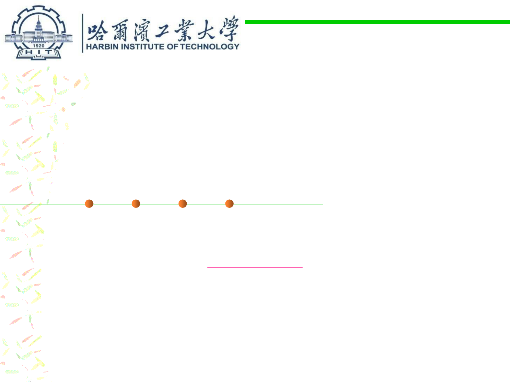
Software Construction
Chapter 8: Software Construction for
Performance
8.3 Code Tuning for Performance
Optimization
Xu Hanchuan
xhc@hit.edu.cn
May 19, 2019

Outline
8.3 Code Tuning for Performance Optimization
▪ 1 Code Tuning Strategies and Process
▪ 2 Common Sources of Inefficiency
▪ 3 Code Tuning for Object Creation and Reuse
– (Creational) Prototype pattern creates objects by cloning an existing object.
– (Creational) Singleton pattern restricts object creation for a class to only
one instance.
– (Structural) Flyweight reduces the cost of creating and manipulating a
large number of similar objects.
– Object Pool Pattern
– Avoiding Garbage Collection
– Object Initialization

Outline
8.3 Code Tuning for Performance Optimization
▪ 4 Code Tuning for Strings
▪ 5 Code Tuning for Logics, Loops, Data Type, Expressions
▪ 6 Code Tuning for I/O and Logging
▪ 7 Code Tuning for Data Structure and Algorithms

Software Construction
1 Code-Tuning Strategies and
Process
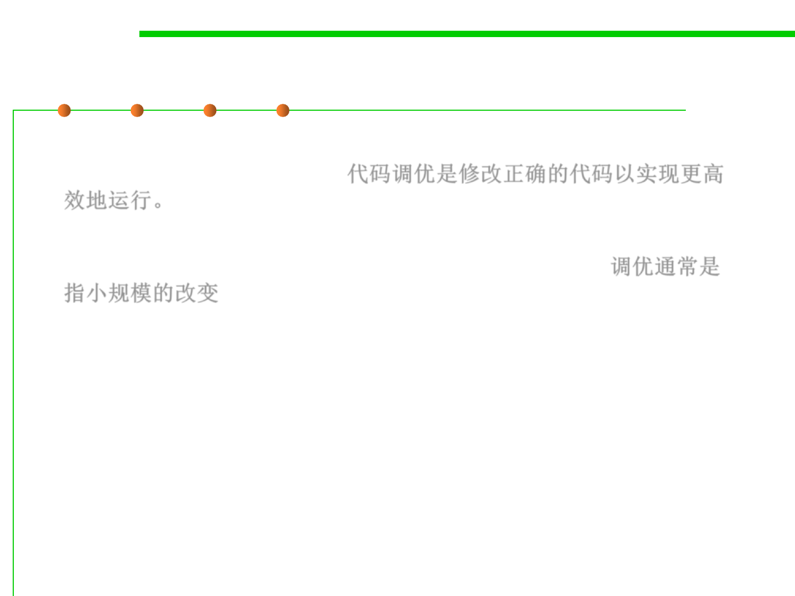
What is code tuning ?
8.3 Code Tuning for Performance Optimization
▪ Code tuning is the practice of modifying correct code in ways that
make it run more efficiently. 代码调优是修改正确的代码以实现更高
效地运行。
▪ “Tuning” refers to small-scale changes that affect a single class, a
single routine, or, more commonly, a few lines of code. 调优通常是
指小规模的改变
▪ “Tuning” does not refer to large-scale design changes, or other
higher-level means of improving performance.
▪ Performance: time and space complexity.

8.3 Code Tuning for Performance Optimization
Consider these options first before tuning
▪ Once you’ve chosen efficiency as a priority, whether its emphasis is
on speed or on size, you should consider several options before
choosing to improve either speed or size at the code level. 在代码层面
调优之前，应首先考虑以下策略：
– Program requirements: Asking for more than is needed leads to trouble (e.g.,
return 1ms, is it always? On average? 99%?) 不要过分强调不需要的性能
– System design: High-level architecture design 高层的架构设计
– Class and function design: data types and algorithm performance 更换数据
类型或算法
– Operating-system interactions: Hidden OS calls within libraries which are
maybe slow or fat 是否由类库中隐藏的对OS的调用导致的问题
– Code compilation: “Automatic” optimization 优化编译器
– Hardware: update HW would be much easier 升级硬件
– Code tuning 代码调优是最后的选择

8.3 Code Tuning for Performance Optimization
The Pareto Principle of program optimization
▪ The Pareto Principle (80/20 rule) states that you can get 80 percent
of the result with 20 percent of the effort.
– Barry Boehm reports that 20 percent of a program’s routines consume 80
percent of its execution time. 20％的程序消耗了80％的执行时间
– Donald Knuth found that less than 4 percent of a program usually
accounts for more than 50 percent of its run time.
▪ The target of code-tuning is to find hotspots (the 20%) and
optimize them. 调优的目标就是找到20%的热点，并优化
▪ “The best is the enemy of the good”. Working toward perfection
may prevent completion. Complete it first, and then perfect it. The
part that needs to be perfect is usually small. 完美是优良的敌人，努
力做到完美，可能会妨碍软件的完成。先解决有无问题，再解决优劣
问题。

What Tuning is Not
8.3 Code Tuning for Performance Optimization
▪ Reducing lines of code 减少代码行×
– Not an indicator of efficient code
▪ A guess at what might improve things 根据猜测进行优化×
– Know what you’re trying, and measure results
▪ Optimizing as you go 随时随地优化×
– Wait until finished, then go back to improve, as optimizing while
programming is often a waste
▪ A “first choice” for improvement 优化排在第一位×
– Worry about other details/design first
 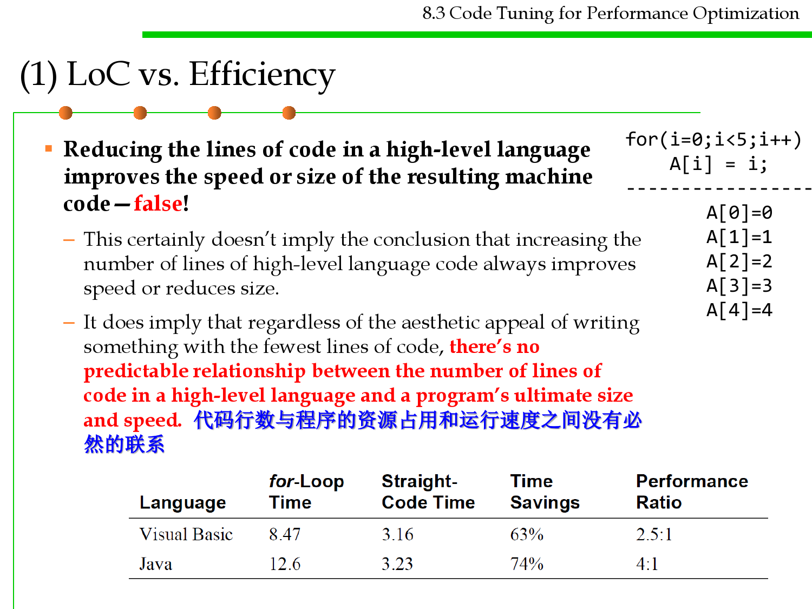
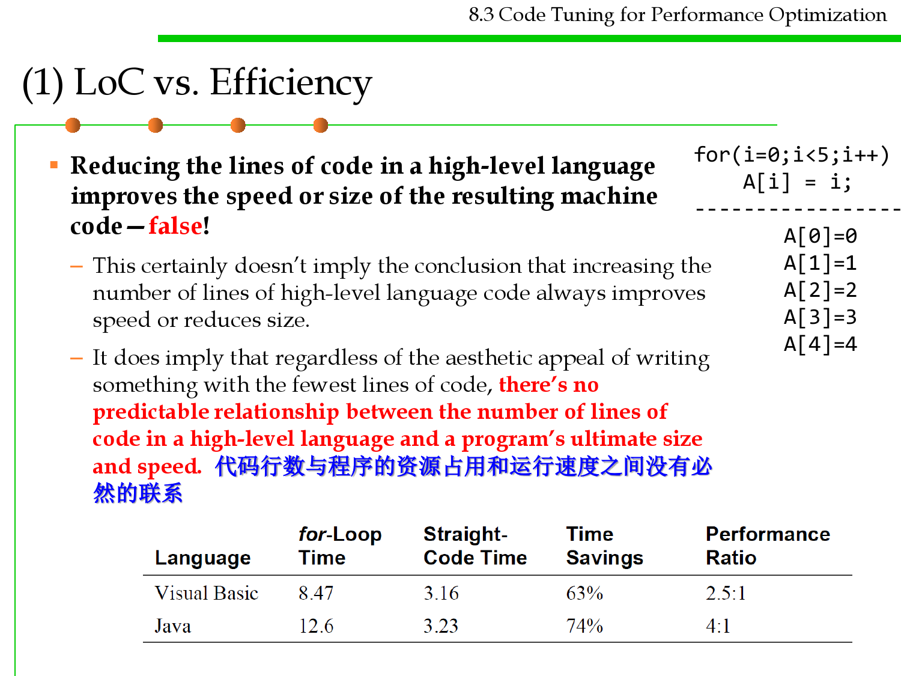
(1) LoC vs. Efficiency
8.3 Code Tuning for Performance Optimization
▪ Reducing the lines of code in a high-level language
improves the speed or size of the resulting machine
code—false!
for(i=0;i<5;i++)
A[i] = i;
-----------------
A[0]=0
– This certainly doesn’t imply the conclusion that increasing the
A[1]=1
number of lines of high-level language code always improves
A[2]=2
speed or reduces size.
A[3]=3
– It does imply that regardless of the aesthetic appeal of writing
A[4]=4
something with the fewest lines of code, there’s no
predictable relationship between the number of lines of
code in a high-level language and a program’s ultimate size
and speed. 代码行数与程序的资源占用和运行速度之间没有必
然的联系
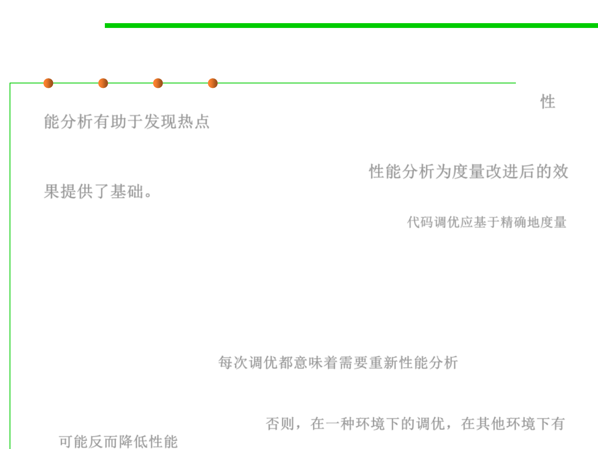 
8.3 Code Tuning for Performance Optimization
(2) Tuning by Profiling and Measuring
▪ Profiling helps determine where code is spending time (hotspots)性
能分析有助于发现热点
▪ Profiling provides basis for measurement: determine whether
“improvement” really improved anything. 性能分析为度量改进后的效
果提供了基础。
▪ Code tuning is based on precise measurements. 代码调优应基于精确地度量
– You must always measure performance to know whether your changes
helped or hurt your program. The rules of the game change every time you
change languages, compilers, versions of compilers, libraries, versions of
libraries, processor, amount of memory on the machine.
– When you tune code, you’re implicitly signing up to re-profile each
optimization every time you change your compiler brand, compiler version,
library version, and so. 每次调优都意味着需要重新性能分析
– If you don’t reprofile, an optimization that improves performance under one
version of a compiler or library might well degrade performance when you
change the build environment. 否则，在一种环境下的调优，在其他环境下有
可能反而降低性能
8.3 Code Tuning for Performance Optimization
(3) Tuning until code complete
▪ You should optimize as you go—false! 不应该随时优化
▪ One theory is that if you strive to write the fastest and smallest
possible code as you write each function, your program will be fast
and small. This approach creates a forest-for-the-trees situation in
which programmers ignore significant global optimizations because
they’re too busy with micro-optimizations. 忙于微观的优化，会导致
忽略了全局的优化
▪ Here are the main problems with optimizing as you go along:
– It’s almost impossible to identify performance bottlenecks before a
program is working completely. 完成开发之前，难以发现瓶颈
– In the rare case in which developers identify the bottlenecks correctly,
they overkill the bottlenecks they’ve identified and allowed others to
become critical. 即使发现并纠正了瓶颈，也可能造成其他的瓶颈
– Focusing on optimization during initial development detracts from
achieving other maybe more important program objectives. 早期关注优化
，会忽略更重要的目标
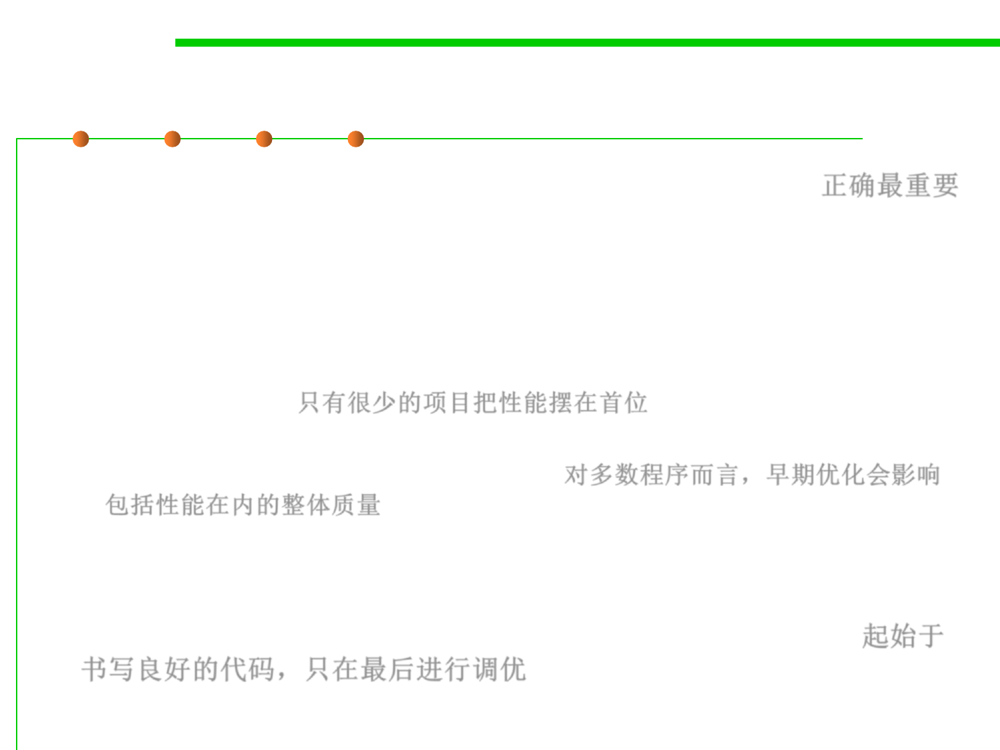
(4) Fast vs. Correct
8.3 Code Tuning for Performance Optimization
▪ A fast program is just as important as a correct one—false! 正确最重要
▪ It’s hardly ever true that programs need to be fast or small before
they need to be correct.
– For a certain class of projects, speed or size is a major concern. This class is
the minority, is much smaller than most people think, and is getting smaller
all the time. For these projects, the performance risks must be addressed by
up-front design. 只有很少的项目把性能摆在首位
– For other projects, early optimization poses a significant threat to overall
software quality, including performance. 对多数程序而言，早期优化会影响
包括性能在内的整体质量
▪ Code correctness/robustness/readability/maintainability/etc. is
usually more important than efficiency.
▪ Always start with well-written code, and only tune at the end 起始于
书写良好的代码，只在最后进行调优

When to Tune
8.3 Code Tuning for Performance Optimization
▪ Use a high-quality design.
▪ Make the program right.
▪ Make it modular and easily modifiable so that it’s easy to work on
later.
▪ When it’s complete and correct, check the performance. If the
program lumbers, make it fast and small.
▪ Don’t optimize until you know you need to.
▪ Jackson’s Rules of Optimization:
– Rule 1. Don’t do it.
– Rule 2 (for experts only). Don’t do it yet— that is, not until you have a
perfectly clear and un-optimized solution.
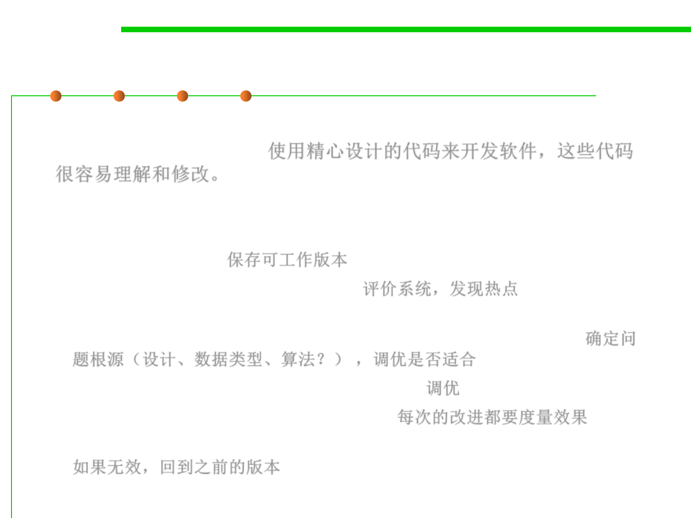
Code Tuning Process
8.3 Code Tuning for Performance Optimization
▪ Develop the software using well-designed code that’s easy to
understand and modify.使用精心设计的代码来开发软件，这些代码
很容易理解和修改。
▪ If performance is poor:
– Save a working version of the code so that you can get back to the “last
known good state.” 保存可工作版本
– Measure the system to find hot spots. 评价系统，发现热点
– Determine whether the weak performance comes from inadequate design,
data types, or algorithms and whether code tuning is appropriate. 确定问
题根源（设计、数据类型、算法？） ，调优是否适合
– Tune the bottleneck identified in the last step. 调优
– Measure each improvement one at a time. 每次的改进都要度量效果
– If an improvement doesn’t improve the code, revert to the previous code.
如果无效，回到之前的版本
▪ Repeat.

Software Construction
2 Common Sources of Inefficiency
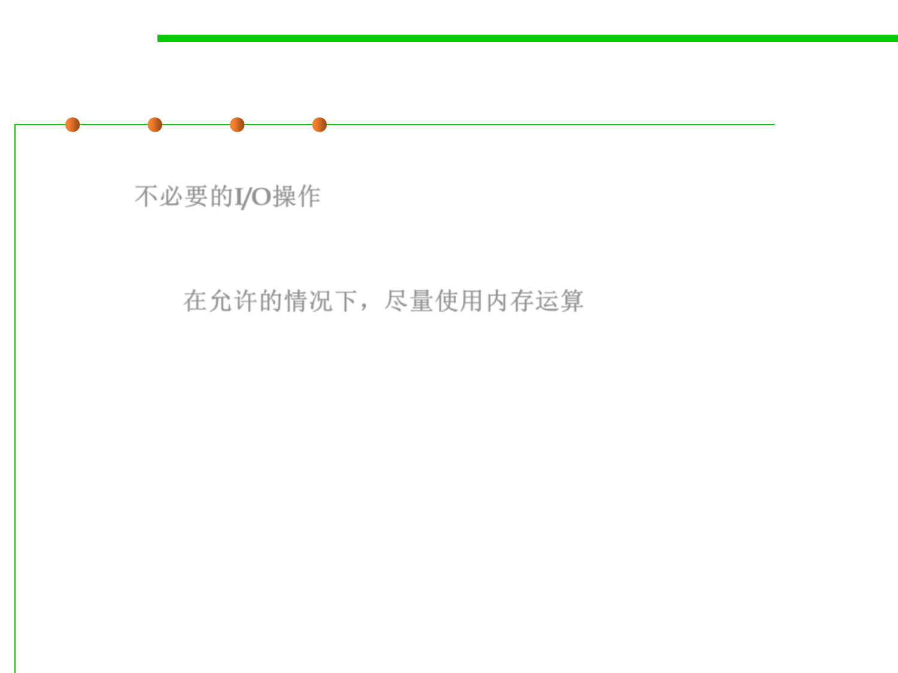
(1) I/O
8.3 Code Tuning for Performance Optimization
▪ One of the most significant sources of inefficiency is unnecessary
I/O. 不必要的I/O操作
▪ If you have a choice of working with a file in memory vs. on disk, in
a database, or across a network, use an in-memory data unless space
is critical. 在允许的情况下，尽量使用内存运算
 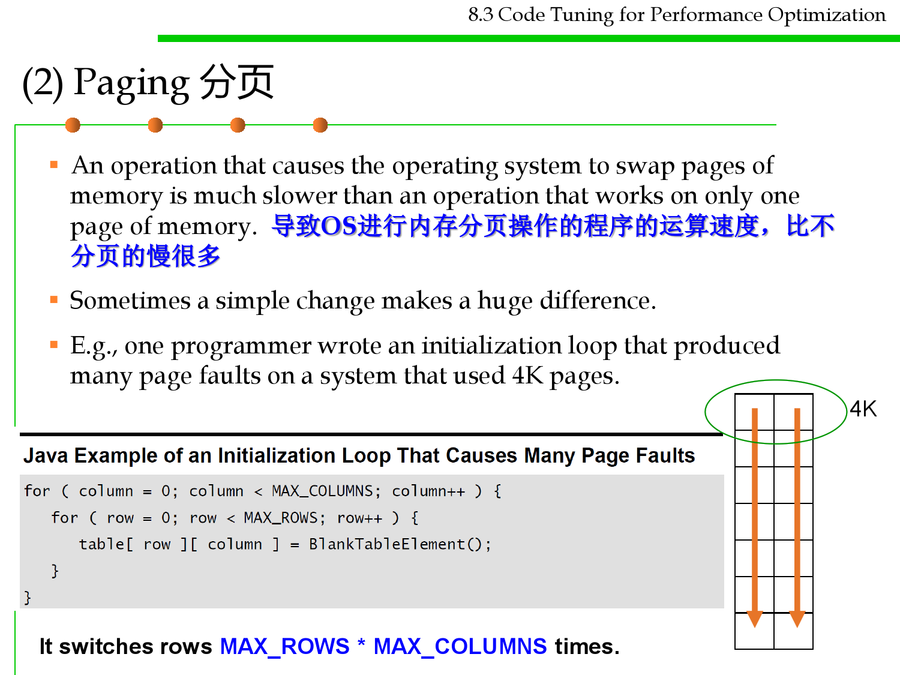
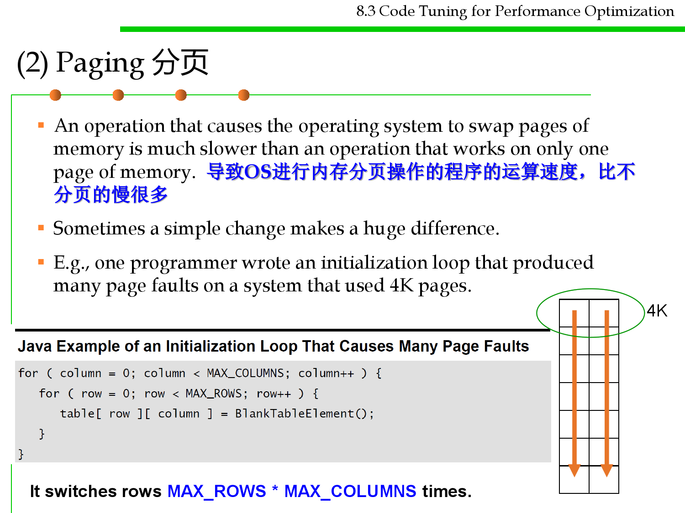
(2) Paging 分页
8.3 Code Tuning for Performance Optimization
▪ An operation that causes the operating system to swap pages of
memory is much slower than an operation that works on only one
page of memory. 导致OS进行内存分页操作的程序的运算速度，比不
分页的慢很多
▪ Sometimes a simple change makes a huge difference.
▪ E.g., one programmer wrote an initialization loop that produced
many page faults on a system that used 4K pages.
4K
It switches rows MAX_ROWS * MAX_COLUMNS times.
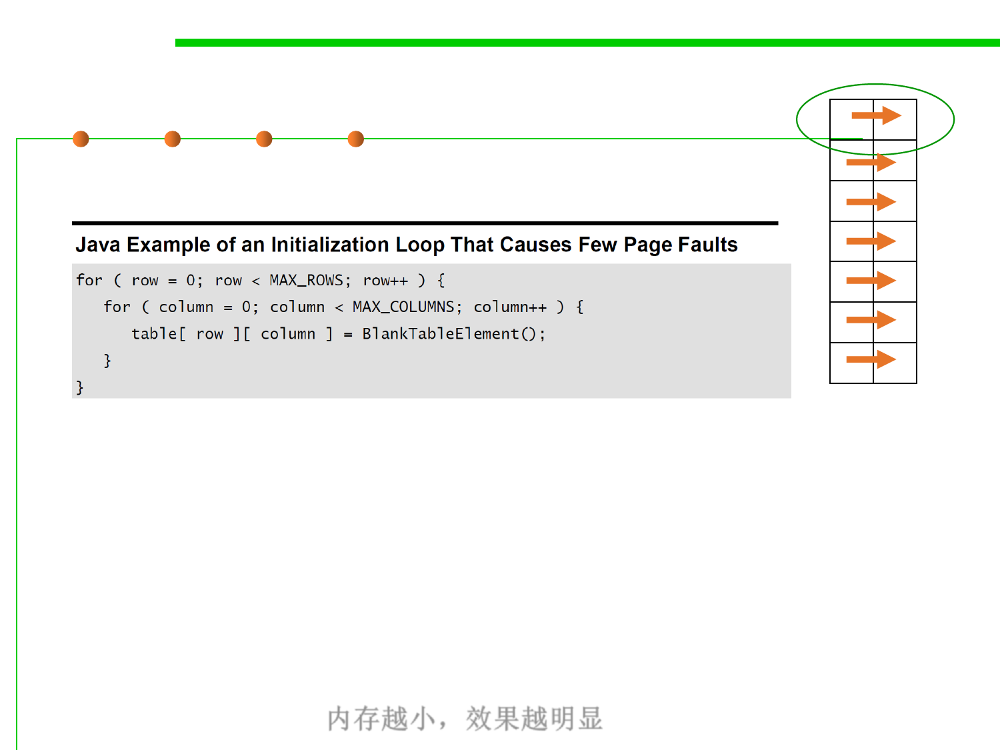
8.3 Code Tuning for Performance Optimization
Paging
4K
▪ The programmer restructured the loop this way:
▪ This code still causes a page fault every time it switches rows, but it
switches rows only MAX_ROWS times instead of MAX_ROWS *
MAX_COLUMNS times.
▪ The specific performance penalty varies significantly. On a machine
with limited memory, the second code sample to be about 1000 times
faster than the first code sample. On machines with more memory,
the difference to be as small as a factor of 2, and it doesn’t show up at
all except for very large values of MAX_ROWS and
MAX_COLUMNS. 内存越小，效果越明显
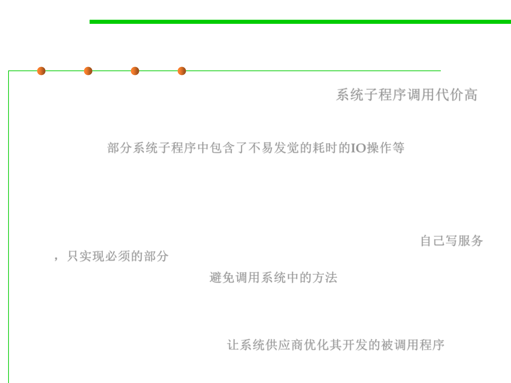
(3) System Calls
8.3 Code Tuning for Performance Optimization
▪ Calls to system routines are often expensive. 系统子程序调用代价高
– System routines include input/output operations to disk, keyboard, screen,
printer, or other device; memory-management routines; and certain utility
routines. 部分系统子程序中包含了不易发觉的耗时的IO操作等
▪ If they’re expensive, consider these options:
– Write your own services. Sometimes you need only a small part of the
functionality offered by a system routine and can build your own from
lower level system routines. Writing your own replacement gives you
something that’s faster, smaller, and better suited to your needs. 自己写服务
，只实现必须的部分
– Avoid going to the system. 避免调用系统中的方法
– Work with the system vendor to make the call faster. Most vendors want
to improve their products and are glad to learn about parts of their systems
with weak performance. (They may seem a little grouchy about it at first,
but they really are interested.) 让系统供应商优化其开发的被调用程序

8.3 Code Tuning for Performance Optimization
(4) Relative Performance Costs of Operations

8.3 Code Tuning for Performance Optimization
Relative Performance Costs of Common Operations
Most of the common operations are about the
same price—routine calls, assignments,
integer arithmetic, and floating-point
arithmetic are all roughly equal.
Transcendental math functions are extremely
expensive. Polymorphic routine calls are a bit
more expensive than other kinds of routine
calls.
In every case, improving speed comes from
replacing an expensive operation with a
cheaper one. 多数调优情况下，通过使用低开
销的操作替代高开销的操作，

Software Construction
3 Code Tuning for Object Creation
and reuse
(1) Singleton Pattern
(2) Flyweight Pattern
(3) Object Pool Pattern
(4) Avoiding Garbage Collection
(5) Object Initialization

Software Construction
(1) Singleton Pattern
单例模式

Singleton objects
8.3 Code Tuning for Performance Optimization
▪ Some classes have conceptually one instance 某些类在概念上只有一个
实例
– Many printers, but only one print spooler
– One file system
– One window manager
– An accounting system will be dedicated to serving one company.
▪ Naïve: create many objects that represent the same conceptual
instance
▪ Better: only create one object and reuse it 只创建一个对象，然后复用
– Encapsulate the code that manages the reuse 对管理重用的代码进行封装

8.3 Code Tuning for Performance Optimization
Singleton pattern 单例模式
▪ Intent
– Ensure a class only has one instance, and provide a global point of access
to it. 确保类只有一个实例，并提供一个全局访问点
▪ Applicability
– There must be exactly one instance of a class, and it must be accessible to
clients from a well-known access point. 只能有一个类的实例，并且客户端
可以从众所周知的访问点访问它
– When the sole instance should be extensible by subclassing, and clients
should be able to use an extended instance without modifying their code.
当唯一的实例可以通过子类扩展时，客户端应该能够使用扩展实例而不修
改它们的代码

Singleton pattern
8.3 Code Tuning for Performance Optimization
▪ Benefit:
– Controlled access to sole instance. 对唯一实例的受控访问
– Reduced name space.(The Singleton pattern is an improvement over
global variables). 缩小命名空间(对全局变量的一种改进)
– Class encapsulates code to ensure reuse of the object; no need to burden
client 类通过封装确保对象的复用，不用让客户端考虑
– Reuse implies better performance
• For frequently used objects, you can save the time it takes to create a new object;
节省创建时间
• As the number of new operations decreased, the use of system memory can be
reduced. 降低内存消耗
• Therefore, for the core components of the system and frequently used objects, the
use of singleton pattern can effectively improve system performance. 对于系统的
核心组件和经常使用的对象，使用单例模式可以有效地提高系统性能。
Singleton pattern
8.3 Code Tuning for Performance Optimization
▪ Class is responsible for tracking its sole instance 类负责管理其唯一
实例
– Make constructor private 使构造器private
– Provide static method/field to allow access to the only instance of the class
提供static方法和字段允许对唯一实例的调用
▪ Structure
return uniqueInstance


8.3 Code Tuning for Performance Optimization
Implementing the Singleton method
▪ In Java, just define a static and private instance field, and a private
constructor
public class Singleton {
private static Singleton instance = new Singleton();
private Singleton() {…} //clients can’t access the constructor
public static Singleton getInstance() {
return instance;
}
// other operations and data
}
//Client code
Singleton s = Singleton.getInstance();
▪ Java semantics guarantee object is created immediately before first use
8.3 Code Tuning for Performance Optimization
Implementing the Singleton method
▪ To further improve performance, lazy load technique can be used to
avoid the situation that it may take much time to create the sole
instance at startup and the instance will be created when it is first
used. 延迟加载，不在启动时创建实例，在首次访问时创建
public class Singleton {
private static Singleton instance;
private Singleton() {…}
public static Singleton getInstance() {
if (instance == null)
instance = new Singleton();
return instance;
}
// other operations and data
}
▪ Pay attention to the usage in multi-thread program (see 10-1)

Software Construction
(2) Flyweight Pattern
享元模式
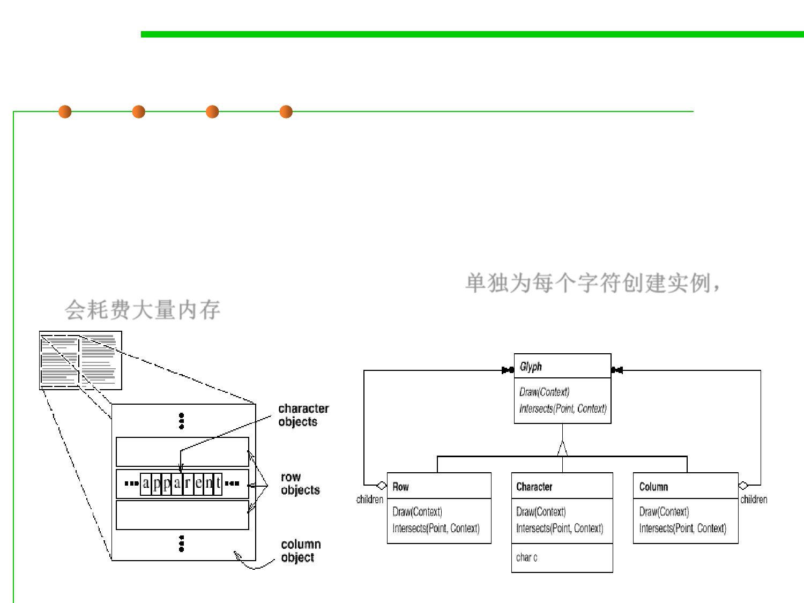
8.3 Code Tuning for Performance Optimization
Flyweight Pattern - Motivation
▪ How can a document editor use objects to represent characters?
▪ The drawback of such a design is its cost.
▪ Even moderate-sized documents may require hundreds of thousands
of character objects, which will consume lots of memory and may
incur unacceptable run-time overhead. 单独为每个字符创建实例，
会耗费大量内存

Flyweight Pattern
8.3 Code Tuning for Performance Optimization
▪ The Flyweight pattern describes how to share objects to allow their
use at fine granularities without prohibitive cost. 享元模式描述了
如何共享对象，有效支持细粒度的使用而不会产生过高的成本
– A flyweight is a shared object that can be used in multiple contexts
simultaneously. flyweight是一个共享对象，可在多个情境下同时使用
– Use sharing to support large numbers of fine-grained objects efficiently.
▪ In the flyweight pattern, there is the concept of Intrinsic and
Extrinsic state.
– Intrinsic states(内在状态) are things that are constant and are stored in the
memory, can be shared. 内在状态：不变的状态，可以共享
– Extrinsic states( 外在状态) are things that are not constant and need to be
calculated on the fly, and are therefore not stored in the memory, can not
be shared. 外在状态：状态是不固定的，使用时需要计算，不可共享
– E.g., in a game, the shapes of the aliens are all the same, but their color will
change based on how mad each are. The shapes of the aliens will be
Intrinsic, and the color of the alien will be Extrinsic.
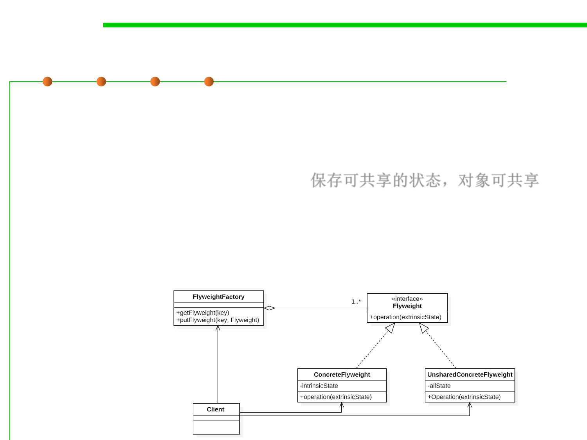
Flyweight Pattern
8.3 Code Tuning for Performance Optimization
▪ Flyweight
– Declares an interface through which flyweights can receive and act on
extrinsic state.
▪ ConcreteFlyweight (E.g.,Character) 保存可共享的状态，对象可共享
– Implements the Flyweight interface and adds storage for intrinsic state, if
any. A ConcreteFlyweight object must be sharable. Any state it stores must
be intrinsic; that is, it must be independent of the ConcreteFlyweight object's
context.

Flyweight Pattern
8.3 Code Tuning for Performance Optimization
▪ UnsharedConcreteFlyweight (E.g., Row, Column) 不可共享
– Not all Flyweight subclasses need to be shared. The Flyweight interface
enables sharing; it doesn't enforce it.
– It's common for UnsharedConcreteFlyweight objects to have
ConcreteFlyweight objects as children at some level in the flyweight object
structure (as the Row and Column classes have).
Flyweight Pattern
8.3 Code Tuning for Performance Optimization
▪ FlyweightFactory
– Creates and manages flyweight objects. 创建和管理flyweight 对象
– Ensures that flyweights are shared properly. When a client requests a
flyweight, the FlyweightFactory object supplies an existing instance or
creates one, if none exists. 给客户端提供flyweight对象
– In general, FlyweightFatory class is just an indexer that allows you to
retrieve the flyweight object when given an index number, since you may
have many flyweight objects in your application. 起到索引器的作用
Flyweight Pattern
8.3 Code Tuning for Performance Optimization
▪ Client
– Maintains a reference to flyweight(s). 通过索引获取flyweight引用
– Computes or stores the extrinsic state of flyweight(s). 调用方法计算外在状态
Example
8.3 Code Tuning for Performance Optimization
▪ Creating aliens of different shapes and colors
– The AlienFactory class stores and retrieves different types of aliens using
its getAlien and saveAlien methods.
– The Alien interface defines the shape property as the intrinsic state and
the getColor method as the extrinsic state.
– The LargeAlien and the LittleAlien classes are the flyweight objects where
each has its own shape intrinsic state and ways of calculating
the getColor extrinsic state.
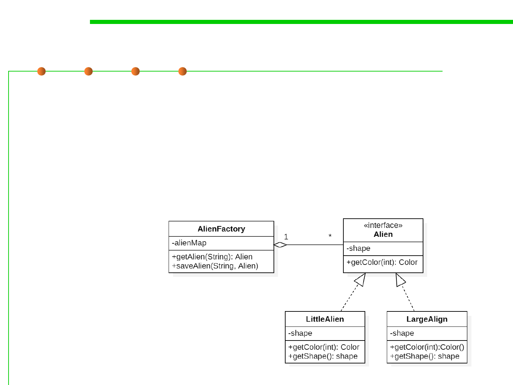
Example
8.3 Code Tuning for Performance Optimization
public enum Color {Red, Green, Blank, Blue, Yellow}
public interface Alien {
String shape=null; //intrinsic state
String getShape();
Color getColor(int madLevel); //extrinsic state
}

Example
8.3 Code Tuning for Performance Optimization
public class LargeAlien implements Alien{
private String shape = "Large Shape";
public String getShape(){
return shape; }
//intrinsic state
public Color getColor(int madLevel){
if (madLevel == 0)
return Color.Green;
else if (madLevel == 1)
return Color.Red;
else
return Color.Blue;
}
}
//extrinsic state
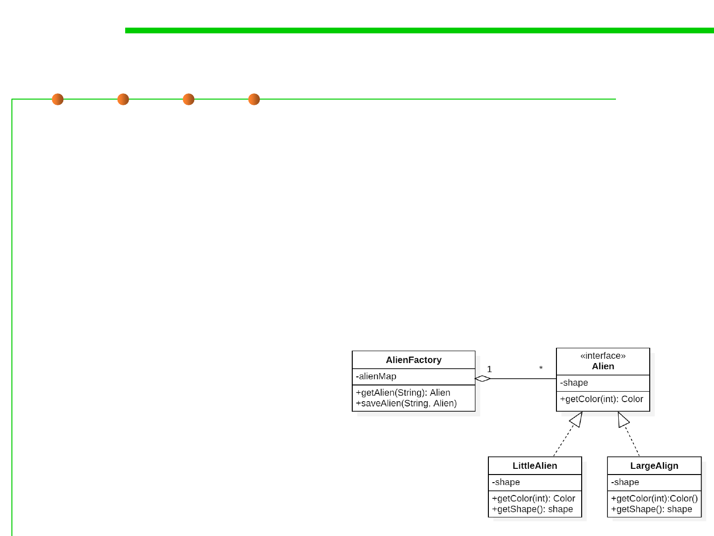
Example
8.3 Code Tuning for Performance Optimization
public class LittleAlien implements Alien {
private String shape = "Little Shape"; //intrinsic state
public String getShape() {
return shape;
}
public Color getColor(int madLevel) {//extrinsic state
if (madLevel == 0)
return Color.Red;
else if (madLevel == 1)
return Color.Blue;
else
return Color.Green;
}
}
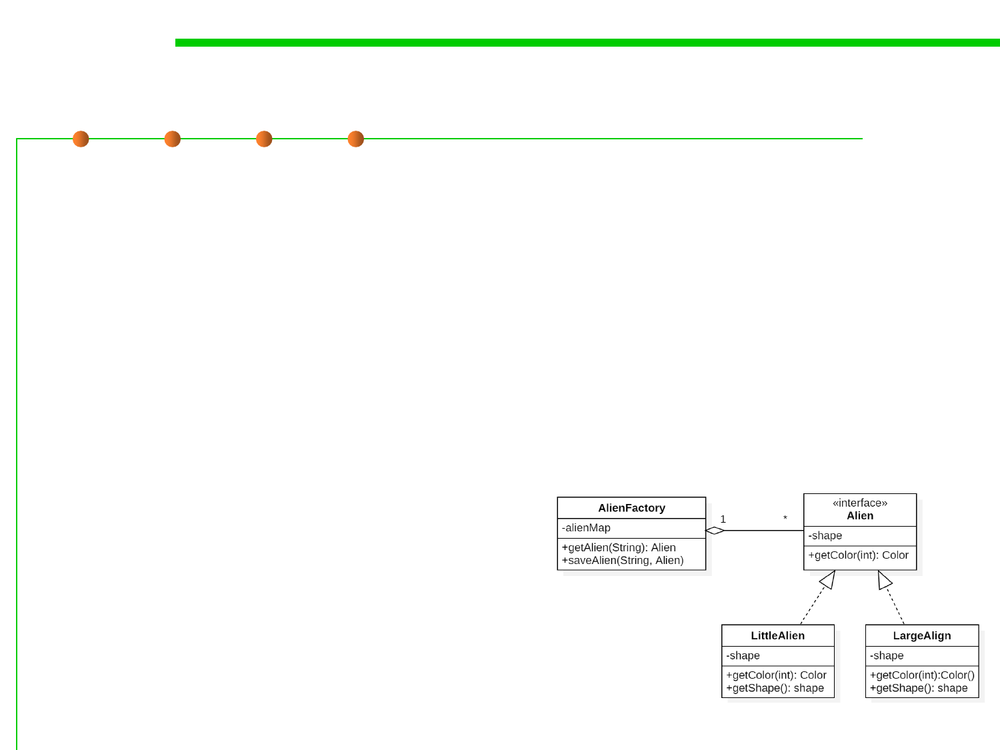
Example
8.3 Code Tuning for Performance Optimization
public class AlienFactory {
private Map<String,Alien> alienMap = new HashMap<>();
public void saveAlien(String index, Alien alien)
{
alienMap.put(index,alien);
}
public Alien getAlien(String index)
{
return alienMap.get(index);
}
}
Example
8.3 Code Tuning for Performance Optimization
public class program {
public static void main(String[] args) {
//create aliens and store in factory
AlienFactory factory = new AlienFactory();
factory.saveAlien("LargeAlien", new LargeAlien());
factory.saveAlien("LittleAlien", new LittleAlien());
//now access the flyweight objects
Alien a = factory.getAlien("LargeAlien");
Alien b = factory.getAlien("LittleAlien");
//show intrinsic states, all accessed in memory without calculations
System.out.println("Showing intrinsic states...");
System.out.println("Alien of type LargeAlien is " + a.getShape());
System.out.println("Alien of type LittleAlien is " + b.getShape());
//show extrinsic states, need calculations
System.out.println("Showing extrinsic states...");
System.out.println("Alien of type LargeAlien is " + a.getColor(0).toString());
System.out.println("Alien of type LargeAlien is " + a.getColor(1).toString());
System.out.println("Alien of type LittleAlien is " + b.getColor(0).toString());
System.out.println("Alien of type LittleAlien is " + b.getColor(1).toString());
}
}
 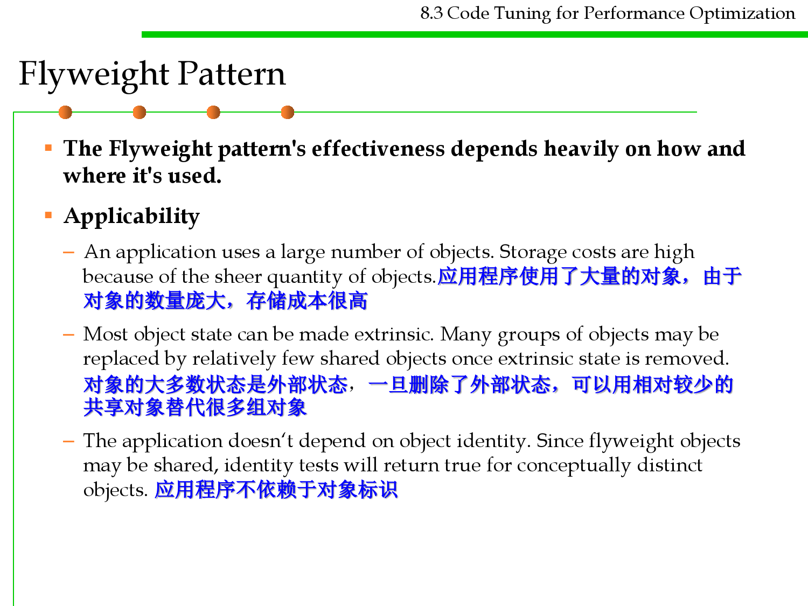
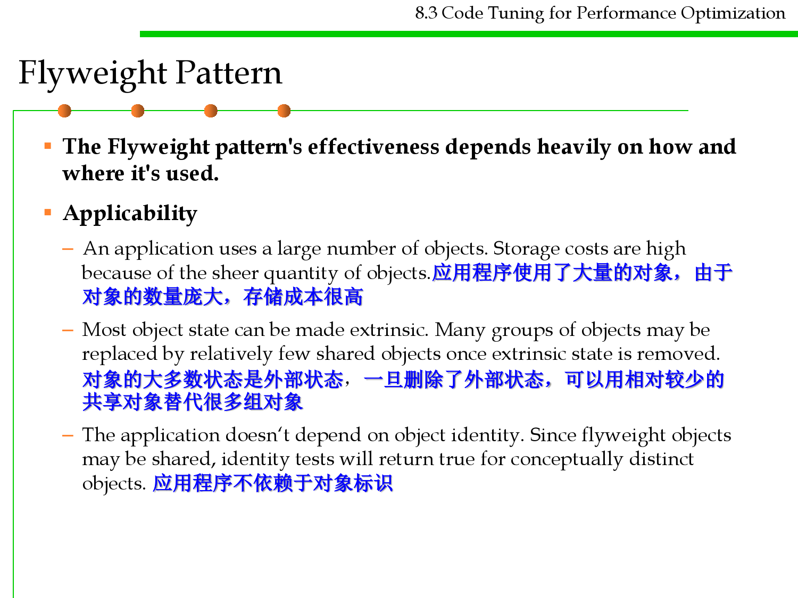
Flyweight Pattern
8.3 Code Tuning for Performance Optimization
▪ The Flyweight pattern's effectiveness depends heavily on how and
where it's used.
▪ Applicability
– An application uses a large number of objects. Storage costs are high
because of the sheer quantity of objects.应用程序使用了大量的对象，由于
对象的数量庞大，存储成本很高
– Most object state can be made extrinsic. Many groups of objects may be
replaced by relatively few shared objects once extrinsic state is removed.
对象的大多数状态是外部状态，一旦删除了外部状态，可以用相对较少的
共享对象替代很多组对象
– The application doesn‘t depend on object identity. Since flyweight objects
may be shared, identity tests will return true for conceptually distinct
objects. 应用程序不依赖于对象标识

Software Construction
(3) Prototype Pattern
原型模式


Prototype pattern
8.3 Code Tuning for Performance Optimization
▪ Specify the kinds of objects to create using a prototypical instance, and
create new objects by copying this prototype. 通过复制已有原型对象新
创建对象
▪ The prototype design pattern allows you to avoid expensive
initialization routines when you construct objects that are very similar.
The goal is to minimize the amount of work needed in creating new
objects when the initialization routines are expensive. 目标：创建或初
始化对象代价高时，可通过此模式创建相似对象，降低开销
▪ The concept of the prototype pattern is similar to a word document
template (prototype), where you create the template only once, then all
the objects that you create afterwards uses the template as the starting
point to avoid repeating the work again. 类似于文档模板，创建一次，
多次被复制使用，作为撰写文档的起点。
Prototype pattern
8.3 Code Tuning for Performance Optimization
▪ The key to the prototype pattern is that you will create your first object
with the expensive initializations, then store the values as a prototype
in the repository.原型模式在初始化创建第一个对象时开销大，然后将
这些值作为原型存储在存储库中。
▪ When you need create the same object again you can just get the copy
of the prototype from the repository with all the values prepopulated.
需要再次创建相同或类似对象时，只需从存储库中获取所有值已经预填
充的原型副本。
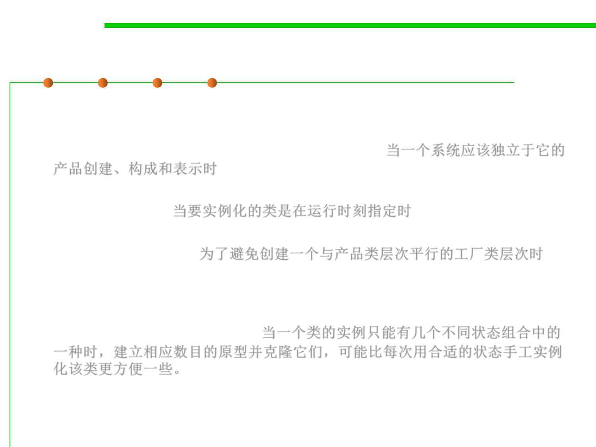
Prototype pattern
8.3 Code Tuning for Performance Optimization
▪ Applicability
– Use the Prototype pattern when a system should be independent of how its
products are created, composed, and represented; 当一个系统应该独立于它的
产品创建、构成和表示时
– when the classes to instantiate are specified at run-time, for example, by
dynamic loading; 当要实例化的类是在运行时刻指定时
– to avoid building a class hierarchy of factories that parallels the class
hierarchy of products;为了避免创建一个与产品类层次平行的工厂类层次时
– when instances of a class can have one of only a few different combinations of
state. It may be more convenient to install a corresponding number of
prototypes and clone them rather than instantiating the class manually, each
time with the appropriate state.当一个类的实例只能有几个不同状态组合中的
一种时，建立相应数目的原型并克隆它们，可能比每次用合适的状态手工实例
化该类更方便一些。

Prototype pattern
8.3 Code Tuning for Performance Optimization
▪ The PrototypeManager class is just a manager class that is used to add
and retrieve prototypes by an index number, it has the following
variable and methods:
– prototypeList variable is the collection that stores all the prototypes
– addPrototype method allows you to add a prototype to the collection and
assigning it an index number
– getPrototype method allows you to retrieve a prototype from the collection
using an index number

Prototype pattern
8.3 Code Tuning for Performance Optimization
▪ The Prototype interface specifies the methods that all prototype classes
must implement.
– It has the clone method that returns an Prototype interface.
▪ The ConcretePrototype class is the actual prototype class, it
implements the Prototype interface and has the following property and
method:
– copyProperty variable holds the information that is prepopulated. If the
variable value is changed then the new instances created will have the new
value.
– clone method will make a copy of itself and return it. If the copyProperty is a
value type (such as int or string) then you can just use shallow copy. If
the copyProperty is a reference type (such as an object that contains other
objects) then you will need to make deep copy of the variable.
Clone() in Java
8.3 Code Tuning for Performance Optimization
▪ Object cloning refers to creation of exact copy of an object. It creates a
new instance of the class of current object and initializes all its fields
with exactly the contents of the corresponding fields of this object. 对
象clone意味着创建一个具有相同内容的副本
▪ Creating a copy using clone() method
– The class whose object’s copy is to be made must have a public clone
method in it or in one of its parent class. 类中要声明clone()方法
– Every class that implements clone() should call super.clone() to obtain the
cloned object reference. 实现clone()时，要调用super.clone()(in Object)
– The class must also implement java.lang.Cloneable interface whose object
clone we want to create otherwise it will throw
CloneNotSupportedException when clone method is called on that class’s
object. 类需要实现 java.lang.Cloneable接口
▪ Syntax:
– protected Object clone() throws CloneNotSupportedException
8.3 Code Tuning for Performance Optimization
clone with shallow copy
▪ Shallow copy(浅拷贝) is a method of copying an object(field-by-field
copy, field-for-field copy, or field copy). In that case a new object B is
created, and the fields values of A are copied over to B. 复制对象A的
所有字段到对象B中.
– If the field value is a primitive type it copies the value of the primitive
type. 基本数据类型采用复制值的形式
– If the field value is a reference to an object (e.g., a memory address) it
copies the reference, hence referring to the same object as A does. The
referenced objects are thus shared, so if one of these objects is modified
(from A or B), the change is visible in the other. 对对象的引用，则复制引
用，此时A和B共享对同一对象的引用。
– Shallow copies are simple and typically cheap, as they can be usually
implemented by simply copying the bits exactly. 实现简单

8.3 Code Tuning for Performance Optimization
clone with shallow copy
// An object reference of this class is
class Test
{
int x, y;
}
contained by Test
// Contains a reference of Test and implements
// clone with shallow copy.
class ShallowCopyTest implements Cloneable
{
int a;
int b;
Test c = new Test();
public Object clone() throws CloneNotSupportedException
{
return super.clone();
}
}

8.3 Code Tuning for Performance Optimization
clone with shallow copy
public static void main(String args[]) throws
CloneNotSupportedException
{ ShallowCopyTest t1 = new ShallowCopyTest();
t1.a = 10;
t1.b = 20;
t1.c.x = 30;
t1.c.y = 40;
ShallowCopyTest t2 = (ShallowCopyTest) t1.clone();
t2.a = 100;
t2.c.x = 300;
System.out.println(t1.a + " " + t1.b + " " +
t1.c.x + " " + t1.c.y);
System.out.println(t2.a + " " + t2.b + " " +
t2.c.x + " " + t2.c.y);
}
clone with deep copy
8.3 Code Tuning for Performance Optimization
▪ An alternative is a deep copy(深拷贝), meaning that fields are
dereferenced:
– rather than references to objects being copied, new copy objects are
created for any referenced objects, and references to these placed in B. 被
复制对象中引用了某对象时，需要创建新的被引用对象(不是共享)
– The result is different from the result a shallow copy gives in that the
objects referenced by the copy B are distinct from those referenced by A,
and independent. A和B完全独立
– Deep copies are more expensive, due to needing to create additional
objects, and can be substantially more complicated, due to references
possibly forming a complicated graph. 实现复杂，当存在复杂的引用关系
图时更加难以实现
 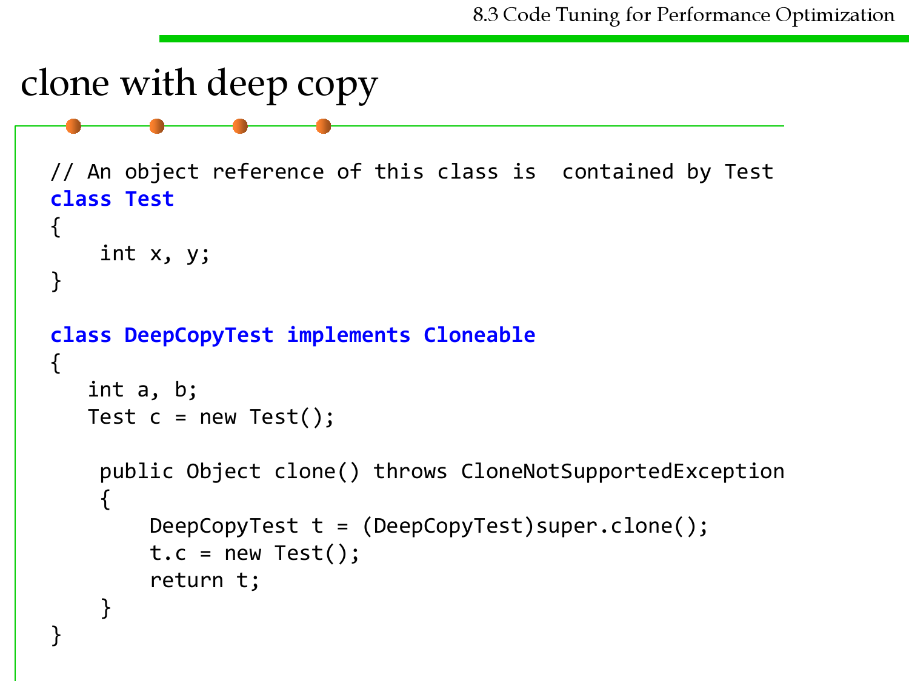
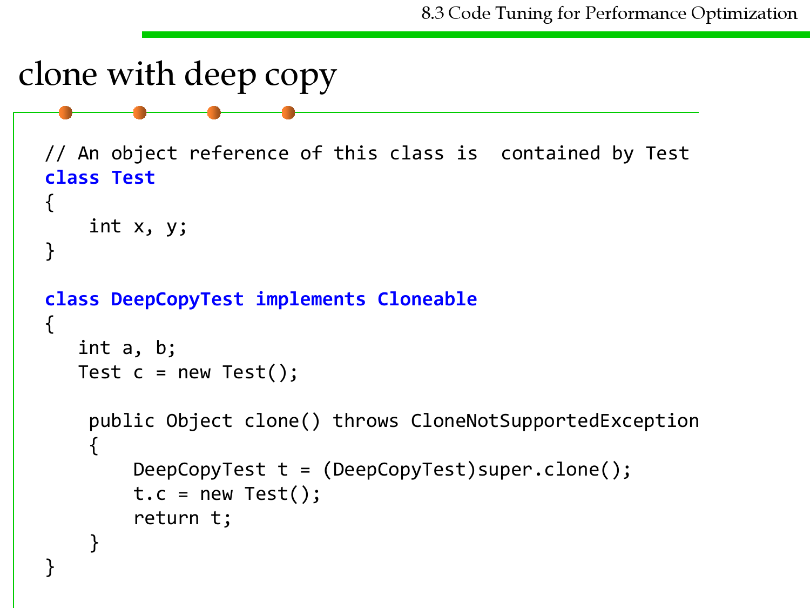
clone with deep copy
8.3 Code Tuning for Performance Optimization
// An object reference of this class is
class Test
{
int x, y;
}
contained by Test
class DeepCopyTest implements Cloneable
{
int a, b;
Test c = new Test();
public Object clone() throws CloneNotSupportedException
{
DeepCopyTest t = (DeepCopyTest)super.clone();
t.c = new Test();
return t;
}
}
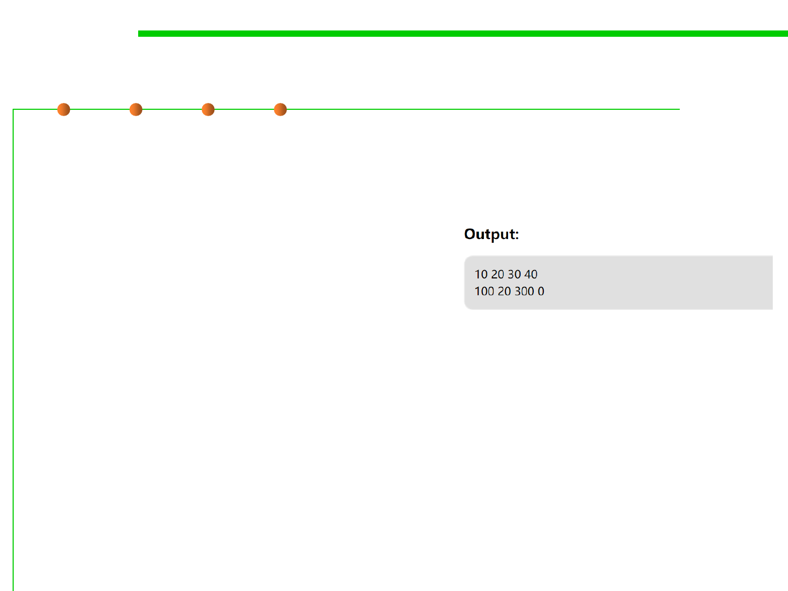
clone with deep copy
8.3 Code Tuning for Performance Optimization
public static void main(String args[]) throws
CloneNotSupportedException
{ DeepCopyTest t1 = new DeepCopyTest();
t1.a = 10;
t1.b = 20;
t1.c.x = 30;
t1.c.y = 40;
DeepCopyTest t3 = (DeepCopyTest)t1.clone();
t3.a = 100;
t3.c.x = 300;
System.out.println(t1.a + " " + t1.b + " " +
t1.c.x + " " + t1.c.y);
System.out.println(t3.a + " " + t3.b + " " +
t3.c.x + " " + t3.c.y);
}
Example of Prototype
8.3 Code Tuning for Performance Optimization
public class PrototypeManager {
private Map<String,Prototype> prototypeMap = new HashMap<>();
public void addPrototype(String index, Prototype prototype)
{
prototypeMap.put(index,prototype);
}
public Prototype get Prototype(String index)
{
return prototypeMap.get(index).clone();
}
}


Example of Prototype
8.3 Code Tuning for Performance Optimization
public class program {
public static void main(String[] args) {
PrototypeManager manager = new PrototypeManager();
//add prototypes into manager
manager.addPrototype(…);
manager.addPrototype(…);
manager.addPrototype(…);
……
Prototype a = manager.getPrototype(…);
//other codes
}
}
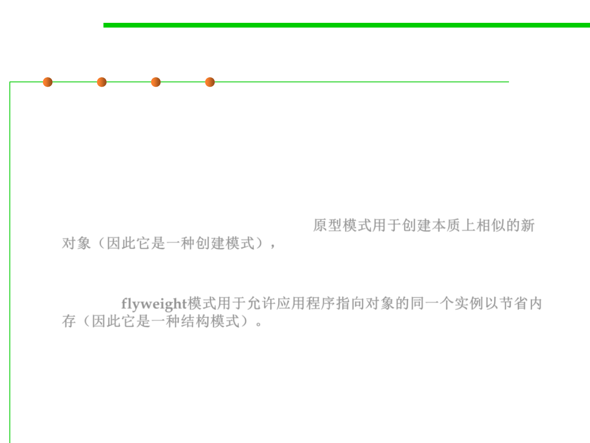 
8.3 Code Tuning for Performance Optimization
prototype pattern vs. flyweight pattern
▪ Similarities
– Both of them uses a manager to store and retrieve the objects in the
collection.
▪ Differences
– The prototype pattern is used to create new objects that are similar in
nature (hence it‘s a creational pattern),原型模式用于创建本质上相似的新
对象（因此它是一种创建模式），
– while the flyweight pattern is used to allow the application to point to the
same instance of the object to save memory (hence it's a structural
pattern). flyweight模式用于允许应用程序指向对象的同一个实例以节省内
存（因此它是一种结构模式）。

Software Construction
(4) Object Pool Pattern

Object reuse
8.3 Code Tuning for Performance Optimization
▪ Objects are expensive to create.
– Where it is reasonable to reuse the same object, you should do so. You need
to be aware of when not to call new. 重复使用，避免重新创建
▪ One fairly obvious situation is when you have already used an object
and can discard it before you are about to create another object of the
same class. 已经有了一个对象，并不再使用时，可让程序其他部分继续
使用
– You should look at the object and consider whether it is possible to reset the
fields and then reuse the object, rather than throw it away and create another.
– This can be particularly important for objects that are constantly used and
discarded: for example, in graphics processing, objects such as Rectangles,
Points, Colors, and Fonts are used and discarded all the time.
– Recycling these types of objects can certainly improve performance.
– 回收再利用
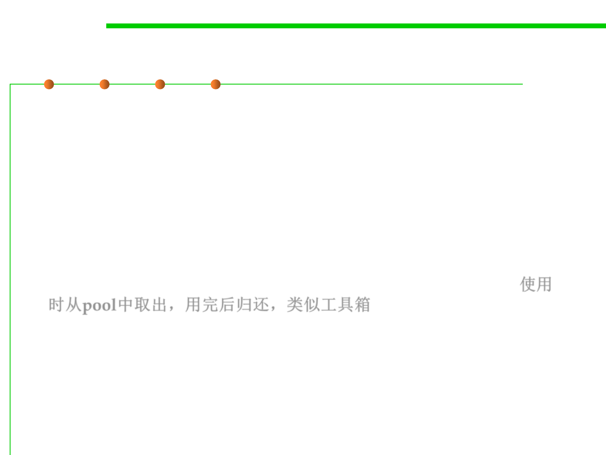
Object Pool Pattern
8.3 Code Tuning for Performance Optimization
▪ The object pool pattern is a software creational design pattern that
uses a set of initialized objects kept ready to use – a "pool" – rather
than allocating and destroying them on demand.
▪ E.g., database connection pool, printer pool
▪ A client of the pool will request an object from the pool and perform
operations on the returned object.
▪ When the client has finished, it returns the object to the pool rather
than destroying it; this can be done manually or automatically. 使用
时从pool中取出，用完后归还，类似工具箱

8.3 Code Tuning for Performance Optimization
Object Pool Pattern vs Flyweight Pattern
▪ 原理不同：
– object pool的原理是复用，pool中object被取出后，只能由一个client使用；
– Flyweight的原理是共享，一个object可被多个client同时使用。
▪ 对象性质不同：
– object pool中的对象是同质的，对于client来说，可以用pool中的任何一个
object。如：需要connection时可以从connection pool中任意的拿一个出来
使用；
– Flyweight的每一个实例的内部属性相同，但是外部属性不同，是异质的。
Flyweight使用时，是去FlyweightFactory中找一个特定的对象出来（如果
没有的话，就创建一个）。
▪ 应用场合不同
– object pool对应的场景是对象被频繁创建、使用，然后销毁。每个对象的生
命期都很短。同一时刻内，系统中存在的对象数也比较小。
– Flyweight对应的情况是在同一时刻内，系统中存在大量对象。
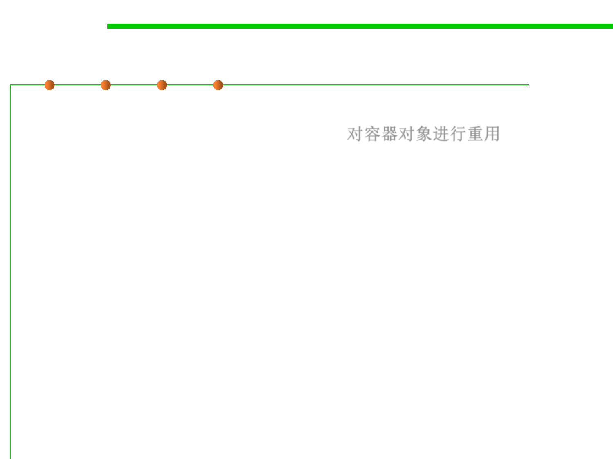
8.3 Code Tuning for Performance Optimization
Reusable containers / collections
▪ Most container objects (e.g., Vectors, Hashtables) can be reused
rather than created and thrown away. 对容器对象进行重用
– While you are not using the retained objects, you are holding onto more
memory than if you simply discarded those objects, and this reduces the
memory available to create other objects.
– You need to balance the need to have some free memory available against
the need to improve performance by reusing objects.
– But generally, the space taken by retaining objects for later reuse is
significant only for very large collections, and you should certainly know
which ones these are in your application.
 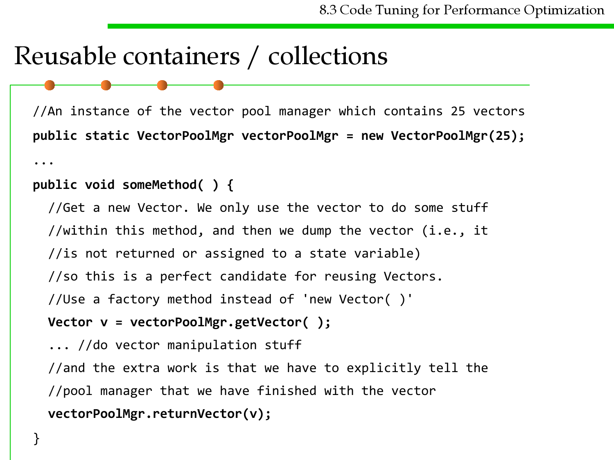
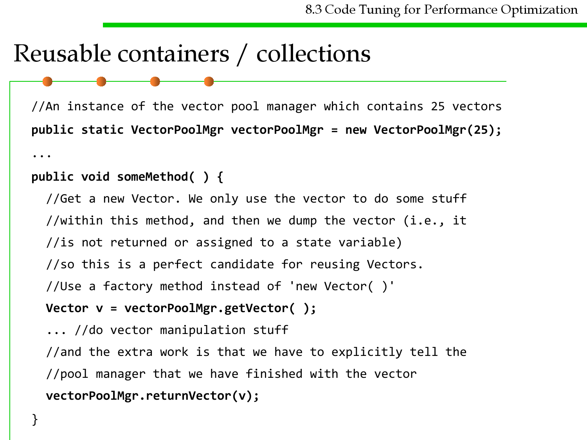
8.3 Code Tuning for Performance Optimization
Reusable containers / collections
//An instance of the vector pool manager which contains 25 vectors
public static VectorPoolMgr vectorPoolMgr = new VectorPoolMgr(25);
...
public void someMethod( ) {
//Get a new Vector. We only use the vector to do some stuff
//within this method, and then we dump the vector (i.e., it
//is not returned or assigned to a state variable)
//so this is a perfect candidate for reusing Vectors.
//Use a factory method instead of 'new Vector( )'
Vector v = vectorPoolMgr.getVector( );
... //do vector manipulation stuff
//and the extra work is that we have to explicitly tell the
//pool manager that we have finished with the vector
vectorPoolMgr.returnVector(v);
}
8.3 Code Tuning for Performance Optimization
Canonicalizing Objects规范化/标准化对象
▪ Canonicalizing objects: replacing multiple copies of an object with just
a few objects. 规范化的对象：用少量对象替代一个对象的大量副本
▪ For example:
Boolean t1 = new Boolean(true);
System.out.println(t1==Boolean.TRUE);
System.out.println(t1.equals(Boolean.TRUE));
➔false
➔true
▪ If Booleans had been canonicalized, all Boolean comparisons could be
done by identity: comparison by identity is always faster than
comparison by equality, because identity comparisons are simply
pointer comparisons. “==” 比较比equals()快，通过规范化可实现用
“==”比较替代equals()比较

8.3 Code Tuning for Performance Optimization
Example: Integer canonicalization
▪ If you use just a few Integer objects in some defined way, you
repeatedly create the Integer objects with values 1, 2, 3, etc.,
and also access the integerValue() to compare them.
▪ Otherwise, you can canonicalize a few integer objects, improving
performance in several ways: eliminating the extra Integer
creations and the garbage collections of these objects when they are
discarded, and allowing comparison by identity. 创建常用整数，并
保留
public class IntegerManager {
public static final Integer ZERO = new Integer(0);
public static final Integer ONE = new Integer(1);
public static final Integer TWO = new Integer(2);
……
public static final Integer NINE = new Integer(9);
public static final Integer TEN = new Integer(10);
}
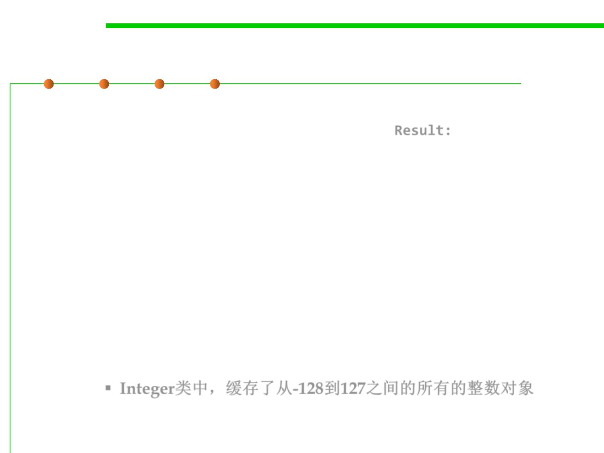
8.3 Code Tuning for Performance Optimization
Example: Integer canonicalization
Integer i1 = new Integer(1);
Integer i2 = new Integer(1);
System.out.println(i1.hashCode());
System.out.println(i2.hashCode());
System.out.println(i1 == i2);
System.out.println(i1.equals(i2));
System.out.println("-------------------");
Integer i3 = 1;
Integer i4 = 1;
System.out.println(i3.hashCode());
System.out.println(i4.hashCode());
System.out.println(i3 == i4);
System.out.println(i3.equals(i4));
Result:
1
1
false
true
-------------------
1
1
true
true
▪ Integer类中，缓存了从-128到127之间的所有的整数对象
8.3 Code Tuning for Performance Optimization
Example: Enumerating constants
▪ Another canonicalization technique often used is replacing constant
objects with integers. 用整数替换常量对象
▪ For example, rather than use the strings "female" and "male", you
should use a constant defined in an interface:
public interface GENDER {
public static final int FEMALE=1;
public static final int MALE=2;
}
▪ Used consistently, this enumeration can provide both speed and
memory advantages.
– The enumeration requires less memory than the equivalent strings and
makes network transfers faster. 枚举需要的内存少于等效字符串，并使网
络传输速度更快。
– Comparisons are faster too, as the identity comparison can be used instead
of the equality comparison. 可使用== 替代 equals()

Software Construction
(5) Avoiding Garbage Collection

8.3 Code Tuning for Performance Optimization
Various ways of reducing GC
▪ The canonicalization techniques are one way to avoid garbage
collection: fewer objects means less to garbage-collect. 规范化
▪ Similarly, the pooling technique in that section also tends to reduce
garbage-collection requirements, partly because you are creating
fewer objects by reusing them, and partly because you deallocate
memory less often by holding onto the objects you have allocated. 采
用pool
▪ Another technique for reducing garbage-collection impact is to avoid
using objects where they are not needed. 避免创建额外对象
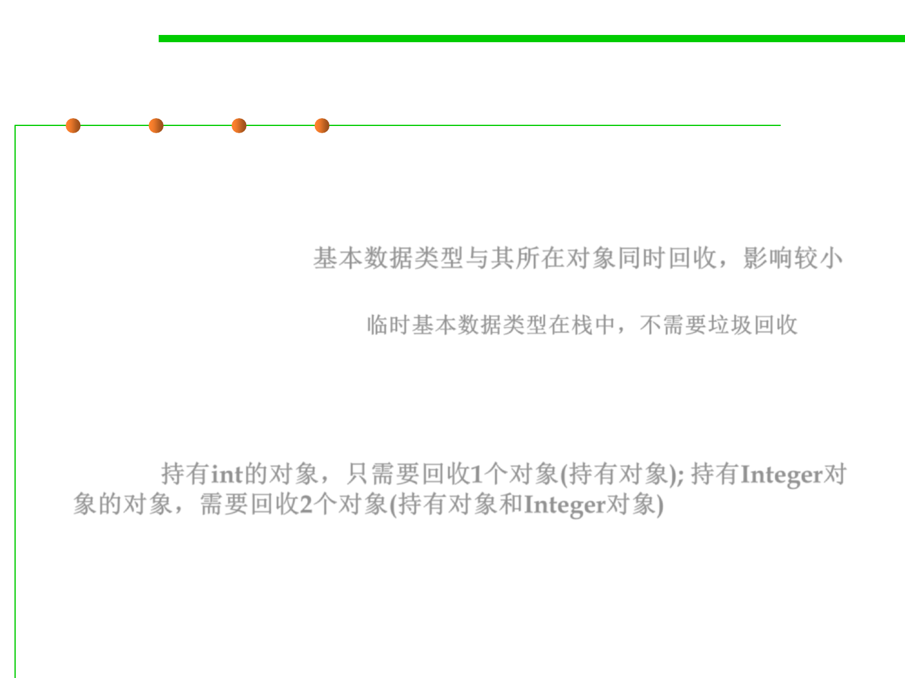
8.3 Code Tuning for Performance Optimization
Primitive data types induce less GC
▪ The primitive data types in Java use memory space that also needs
reclaiming, but the overhead in reclaiming data-type storage is
smaller: it is reclaimed at the same time as its holding object and so
has a smaller impact. 基本数据类型与其所在对象同时回收，影响较小
– Temporary primitive data types exist only on the stack and do not need to
be garbage-collected at all 临时基本数据类型在栈中，不需要垃圾回收
▪ For example, an object with just one instance variable holding an int is
reclaimed in one object reclaim.
▪ If it holds an Integer object, the garbage collector needs to reclaim two
objects. 持有int的对象，只需要回收1个对象(持有对象); 持有Integer对
象的对象，需要回收2个对象(持有对象和Integer对象)
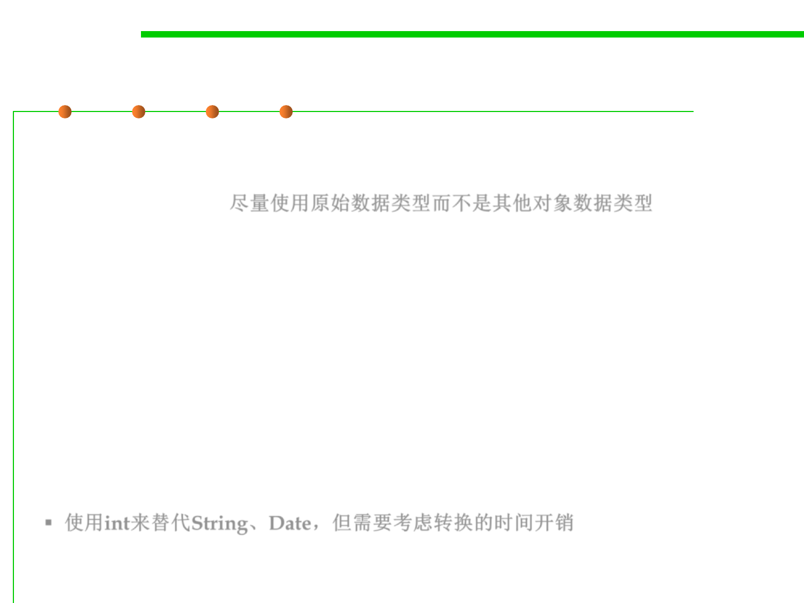
8.3 Code Tuning for Performance Optimization
Primitive data types induce less GC
▪ Reducing garbage collection by using primitive data types also applies
when you can hold an object in a primitive data-type format rather than
another format. 尽量使用原始数据类型而不是其他对象数据类型
– For example, if you have a large number of objects, each with a String
instance variable holding a number (e.g., "1492", "1997"), it is better to make
that instance variable an int data type and store the numbers as ints,
provided that conversion overhead does not swamp the benefits of holding
the values in this alternative format.
▪ Similarly, you can use an int (or long) to represent a Date object,
providing appropriate calculations to access and update the values,
thus saving an object and the associated garbage overhead.
– Hint: you have a different runtime overhead instead, as those conversion
calculations may take up more time.
▪ 使用int来替代String、Date，但需要考虑转换的时间开销

8.3 Code Tuning for Performance Optimization
Primitive data types induce less GC
class MyClass {
int x;
boolean y;
}
▪ To define a Collection of MyClass, there are two ways:
class MyClassCollection {
int[ ] xs;
boolean[ ] ys;
public int getXForElement(int i) {return xs[i];}
public boolean getYForElement(int i) {return ys[i];}
}
---------------------------------------------------------
List<MyClass> myClassCollection = new ArrayList<MyClass>;

8.3 Code Tuning for Performance Optimization
Other general recommendations
▪ Reduce the number of temporary objects being used, especially in
loops. 减少正在使用的临时对象的数量，特别是在循环中
▪ Use StringBuffer in preference to the String concatenation
operator (+). This is really a special case of the previous point. 用
StringBuffer替代 “+”
▪ Be aware of which methods alter objects directly without making
copies and which ones return a copy of an object. 注意哪些方法直接
更改对象而不进行复制，哪些方法会返回对象的副本
– Any String method that changes the string (such as String.trim())
returns a new String object, whereas a method like Vector.setSize()
does not return a copy. If you do not need a copy, use (or create) methods
that do not return a copy of the object being operated on.
▪ Avoid using generic classes that handle Object types when you are
dealing with basic data types. 在处理基本类型时避免使用通用的类
– For example, there is no need to use Vector to store ints by wrapping them in
Integers. Instead, implement an IntVector class that holds the ints directly.

Software Construction
(6) Object Initialization
8.3 Code Tuning for Performance Optimization
Construction and Initialization of Objects
▪ All chained constructors are automatically called when creating an
object with new. Chaining more constructors for a particular object
causes extra overhead at object creation, as does initializing instance
variables more than once. 利用new方法创建对象时，涉及的构造链会
自动执行。开销大。
▪ You should check the constructor hierarchy to eliminate any multiple
initializations to instance variables. 应该检查构造函数层次结构以消除
对实例变量的任何多重初始化。
▪ A common way to avoid constructors when creating objects, namely
by creating a clone( ) of an object. 可以使用clone()替代构造方法，以
避免链式构造
– You can create new instances of classes that implement the Cloneable
interface using the clone( ) method.
– These new instances do not call any class constructor, thus allowing you to
avoid the constructor initializations.
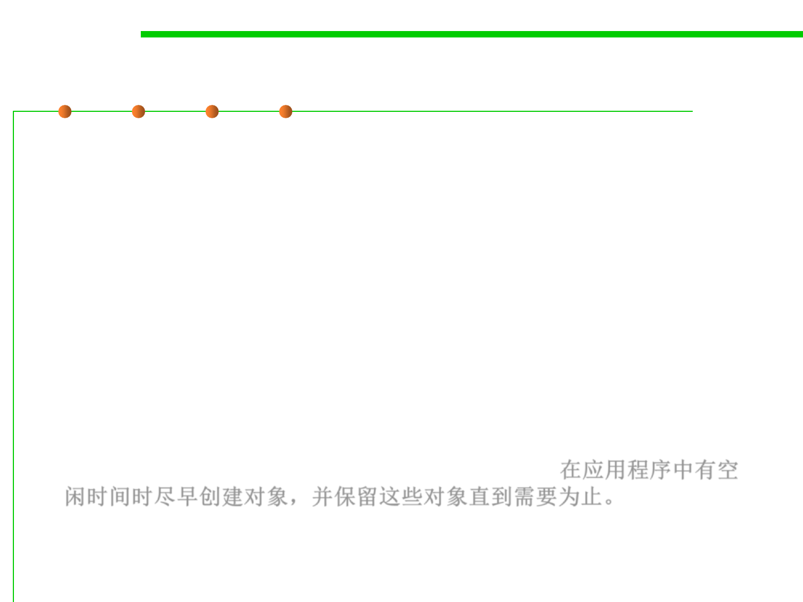
Preallocating Objects
8.3 Code Tuning for Performance Optimization
▪ There may be situations in which you cannot avoid creating
particular objects in significant amounts.
▪ You can still create the objects, but move the creation time to a part of
the application when more spare cycles are available or there is more
flexibility in response times.
▪ The idea is to choose another time to create some or all of the objects
(perhaps in a partially initialized stage) and store those objects until
they are needed.
▪ In one word: Create objects early, when there is spare time in the
application, and hold those objects until required. 在应用程序中有空
闲时间时尽早创建对象，并保留这些对象直到需要为止。

8.3 Code Tuning for Performance Optimization
Late (Lazy) Initialization
▪ Lazy initialization means that you do not initialize objects until the first
time they are used.
▪ Typically, this comes about when you are unsure of what initial value
an instance variable might have but want to provide a default.
▪ Rather than initialize explicitly in the constructor (or class static
initializer), it is left until access time for the variable to be initialized,
using a test for null to determine if it has been initialized.
▪ Proxy pattern can also be used to realize lazy loading or initialization
public getSomething( ){
if (something = = null)
something = defaultSomething( );
return something;
}

Software Construction
4 Code Tuning for Strings
(1) Compile-time and Run-time Resolution
(2) Conversion to Strings
(3) Strings vs. char Arrays
(4) String comparison and searching
(5) Sorting

8.3 Code Tuning for Performance Optimization
Recall: Memory management in JVM
String Constant Pool
8.3 Code Tuning for Performance Optimization
▪ String Constant Pool is a special memory area in Heap that contains
references of string objects. 字符常量池是堆中的内存区域，保存了
string对象
▪ Using string literal: String s = “java”;
– A string written inside double quotes is called string literal.
– Whenever we create string literal the JVM checks string constant pool. If
the string is already present in pool then its reference is fetched.
– If the string is not present in pool, a new string object is created in it.
▪ Using new keyword: String s = new String(“java”);
– When we create string using new keyword it goes to heap.

8.3 Code Tuning for Performance Optimization
String Constant Pool (SCP)
String s1 = "java";
String s2 = "java";
String s3 = new String("java");
if(s1 == s2)
System.out.println("true");
else
System.out.println("false");
if(s1 == s3)
System.out.println("true");
else
System.out.println("false");
8.3 Code Tuning for Performance Optimization
Code Tuning for Strings
Minimize the number of
temporary objects
created on heap so that
GC is minimized.

8.3 Code Tuning for Performance Optimization
Compile-time and Run-time Resolution
▪ When the String can be fully resolved at compile time, the
concatenation operator is more efficient than using a StringBuffer.
▪ When the String cannot be resolved at compile time, the
concatenation operator is less efficient than using a StringBuffer.
▪ Comparisons of examples:
– String s = "hi " + "Mr. " + " " + "Buddy";
– String s = "hi Mr. Buddy";
Same!
Resolved at
compile time
– String s = (new StringBuffer( )).append("hi ").
append("Mr.").append(" ").append("Buddy").toString( );
– String s = "hi " + title + " " + name;
– String s = new String("hi " + "Mr. " + " " + "Buddy");
▪ How many temporary objects are to be created for above examples?

Strings vs. char arrays
8.3 Code Tuning for Performance Optimization
▪ Strings are implemented in the JDK as an internal char array with
index offsets (actually a start offset and a character count).
private char[] a;
private int start;
private int end;

8.3 Code Tuning for Performance Optimization
Some Suggestions on Code Tuning for Strings
▪ Use efficient methods of String that do not copy the characters of
the string, e.g., String.substring().使用不会复制字符串字符的
String方法
▪ Avoid using inefficient methods of String that copy the characters of
the string, e.g., String.toUppercase() and
String.toLowercase().避免使用复制字符串字符的低效String方法
▪ Use the string concatenation operator to create Strings at compile
time. 使用字符串连接运算符(+)在编译时创建字符串
▪ Use StringBuffers to create Strings at runtime. 运行时使用
StringBuffers
▪ Improve access to the underlying String char array by copying the
chars into your own array.
▪ Manipulate characters in char arrays rather than using String and
StringBuffer manipulation. Reuse char arrays.操作char数组中的
字符，而不是使用String和StringBuffer操作。

Software Construction
5 Code Tuning for Logics, Loops,
Data Type, Expressions, and
Functions

Software Construction
(1) Logic-related code tuning

8.3 Code Tuning for Performance Optimization
Stop Testing When You Know the Answer
if ( x>5 && x<10 ) …
▪ Some languages provide a form of expression evaluation known as
“short-circuit evaluation”(短路求值) which means that the compiler
generates code that automatically stops testing as soon as it knows
the answer.
▪ Short-circuit evaluation is part of Java’s “conditional” operators.
▪ 如果语言不支持短路求值，则应使用下面的形式：
if (x>5) {
if (x <10 ) { …}
}

8.3 Code Tuning for Performance Optimization
Stop Testing When You Know the Answer
▪ E.g. for search loop:
boolean found = false;
for (int i = 0; i < iCount; i++ ) {
if (input[i] < 0 ) {
found = True;
}
}
▪ To stop scanning as soon as you find a negative value in the array:
– Add a break statement after the found = True line.
– Change the for loop to a while loop and check for found as well as for
incrementing the loop counter past iCount.
8.3 Code Tuning for Performance Optimization
Substitute Table Lookups for Complicated Logics
▪ In some circumstances, a table lookup may be quicker than
traversing a complicated chain of logic.
▪ The point of a complicated chain is usually to categorize something
and then to take an action based on its category. (See 6.3 Table-
Driven Methods)
8.3 Code Tuning for Performance Optimization
Use Lazy Evaluation 惰性求值
▪ Lazy evaluation: If a program uses lazy evaluation, it avoids doing
any work until the work is needed. 直到用到的时候再求值
▪ Lazy evaluation is similar to just-in-time strategies that do the work
closest to when it’s needed. 类似于及时完成策略，即仅到工作必须
完成的时候才去处理
▪ E.g., a program contains a table of 5000 values, generates the whole
table at startup time, and then uses it as the program executes. If the
program uses only a small percentage of the entries in the table, it
might make more sense to compute them as they’re needed rather
than all at once. Once an entry is computed, it can still be stored for
future reference (“cached”). 在需要时再计算，同时保存结果(cache)
供以后使用

Software Construction
(2) Loops-related code tuning


8.3 Code Tuning for Performance Optimization
Unswitching-将判断外提
▪ Switching refers to making a decision inside a loop every time it’s
executed.
▪ If the decision doesn’t change while the loop is executing, you can
unswitch the loop by making the decision outside the loop.如果在循
环执行时决策没有改变，可以通过在循环外进行决策来断开循环
▪ Usually this requires turning the loop inside out, putting loops inside
the conditional rather than putting the conditional inside the loop.

Jamming-合并
8.3 Code Tuning for Performance Optimization
▪ Jamming, or “fusion,” is the result of combining two loops that
operate on the 287 same set of elements. The gain lies in cutting the
loop overhead from two loops to one.

Unrolling-展开
8.3 Code Tuning for Performance Optimization
▪ The goal of loop unrolling is to reduce the amount of loop
housekeeping.
Deal with the
case
that might fall
through the
cracks if the
loop went by
twos instead of
by ones.
8.3 Code Tuning for Performance Optimization
Minimizing the Work Inside Loops
▪ To minimize the work done inside a loop.
– If you can evaluate a statement or part of a statement outside a loop so
that only the result is used inside the loop, do so. It’s good programming
practice, and, in some cases, it improves readability.

8.3 Code Tuning for Performance Optimization
Sentinel Values—哨兵值
▪ The classic example of a compound test that can be improved by use
of a sentinel is the search loop that checks both whether it has found
the value it is seeking and whether it has run out of values.
the loop really has three tests
for each iteration.
the loop really has one test
for each iteration.

8.3 Code Tuning for Performance Optimization
Putting the Busiest Loop on the Inside
▪ When you have nested loops, think about which loop you want on
the outside and which you want on the inside.
▪ Following is an example of a nested loop that can be improved.
for (column = 0; column<100; column++){
for (row = 0; row<5; row++){
sum = sum + table[row][column];
}
}
▪ The key to improving the loop is that the outer loop executes much
more often than the inner loop. The loop has a total of 600 iterations.
(100 for the outer loop and 100 * 5 = 500 for the inner loop)
8.3 Code Tuning for Performance Optimization
Putting the Busiest Loop on the Inside
▪ By merely switching the inner and outer loops, you can change the
total number of iterations to 5 for the outer loop and 5 * 100 = 500 for
the inner loop, for a total of 505 iterations. You’d expect to save about
(600 – 505) / 600 = 16 percent by switching the loops.
for (row = 0; row<5; row++){
for (column = 0; column<100; column++){
sum = sum + table[row][column];
}
}
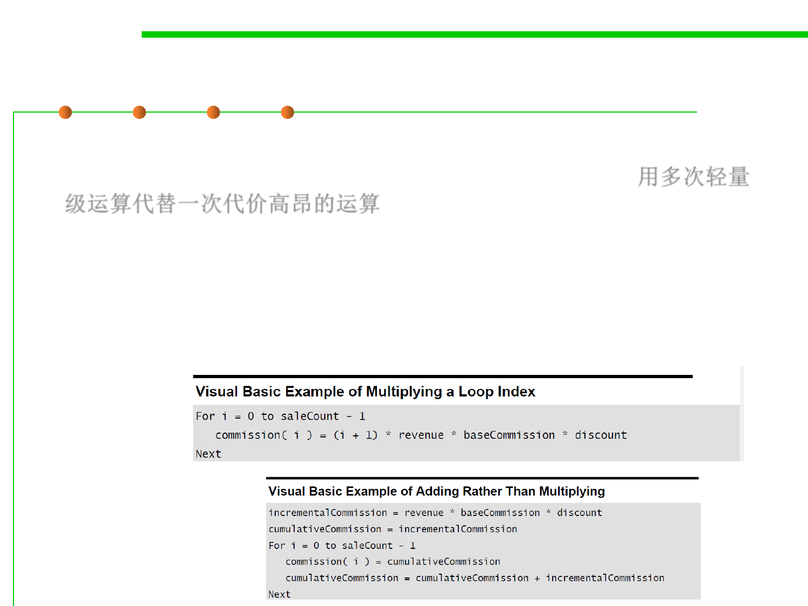
8.3 Code Tuning for Performance Optimization
Strength Reduct—削减强度
▪ Reducing strength means replacing an expensive operation such as
multiplication with a cheaper operation such as addition. 用多次轻量
级运算代替一次代价高昂的运算
▪ Sometimes you’ll have an expression inside a loop that depends on
multiplying the loop index by a factor. Addition is usually faster
than multiplication, and if you can compute the same number by
adding the amount on each iteration of the loop rather than by
multiplying, the code will run faster.
 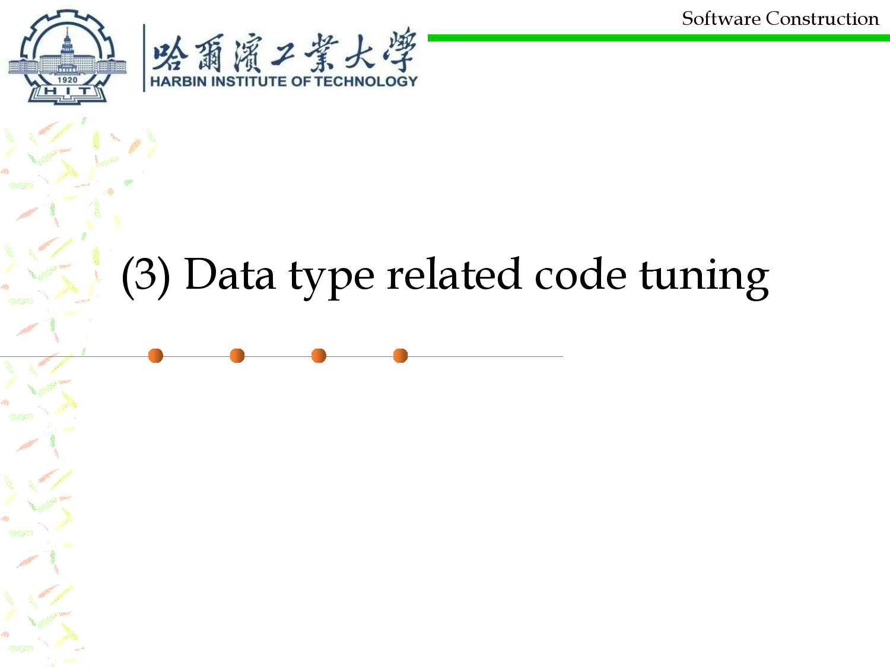
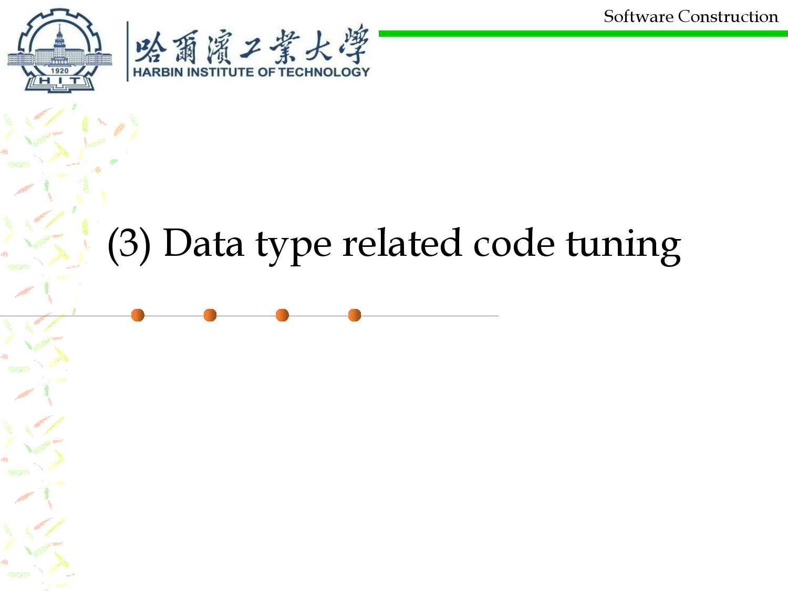
Software Construction
(3) Data type related code tuning
8.3 Code Tuning for Performance Optimization
Use Integers Rather Than Floating-Point Numbers
▪ Integer addition and multiplication tend to be faster than floating
point. Changing a loop index from a floating point to an integer, for
example, can save time. 尽可能使用整数而不是浮点数
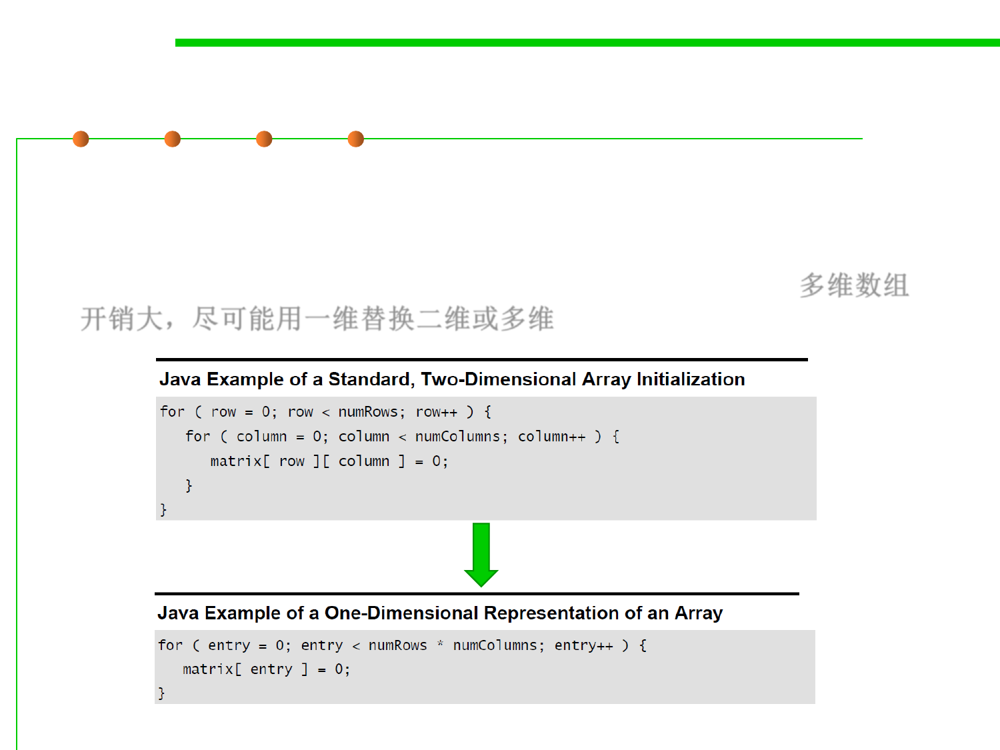
8.3 Code Tuning for Performance Optimization
Use the Fewest Array Dimensions Possible
▪ Conventional wisdom maintains that multiple dimensions on
arrays are expensive. If you can structure your data so that it’s in a
one-dimensional array rather than a two-dimensional or three-
dimensional array, you might be able to save some time. 多维数组
开销大，尽可能用一维替换二维或多维

8.3 Code Tuning for Performance Optimization
Minimize Array References
▪ In addition to minimizing accesses to doubly or triply dimensioned
arrays, it’s often advantageous to minimize array accesses, period.
减少数组引用
▪ A loop that repeatedly uses one element of an array is a good
candidate for the application of this technique.
▪ The reference to discount[ discountType ] doesn’t change when
discountLevel changes in the inner loop. Consequently, you can
move it out of the inner loop so that you’ll have only one array access
per execution of the outer loop rather than one for each execution of
the inner loop.
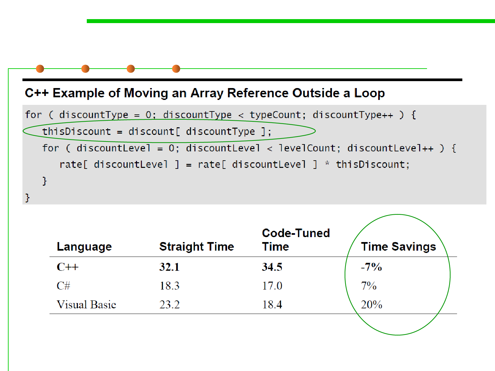
8.3 Code Tuning for Performance Optimization
Minimize Array References

8.3 Code Tuning for Performance Optimization
Use Supplementary Indexes 使用辅助索引
▪ Using a supplementary index means adding related data that
makes accessing a data type more efficient. You can add the related
data to the main data type, or you can store it in a parallel structure.
辅助索引是添加相关数据，使得对某种数据的访问更为高效
▪ E.g.,
– String-Length Index 字符串长度索引
• In C, strings are terminated by a byte that’s set to 0.
• You can apply the idea of indexing for length to any variable-length data type.
It’s often more efficient to keep track of the length of the structure rather than
computing the length each time you need it.
– Independent, Parallel Index Structure 独立的平行的索引结构
• Sometimes it’s more efficient to manipulate an index to a data type than it is to
manipulate the data type itself.
• If each data item is large, you can create an auxiliary structure that consists of key
values and pointers to the detailed information. If the difference in size between
the data-structure item and the auxiliary-structure item is great enough,
sometimes you can store the key item in memory even when the data item has to
be stored externally. 对索引排序和查找会比直接对数据进行操作要快
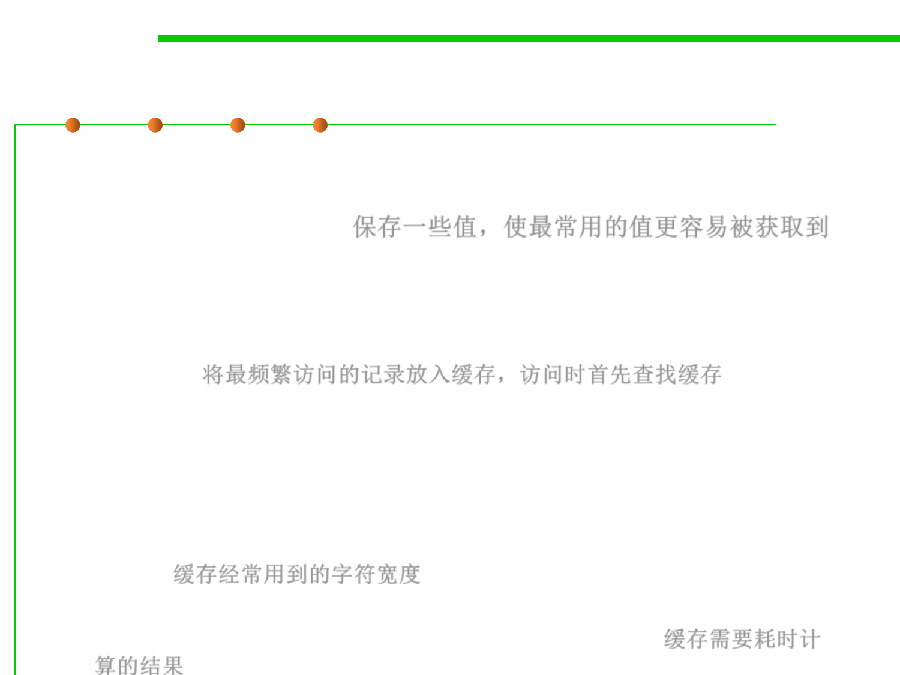
Use Caching 使用缓存
8.3 Code Tuning for Performance Optimization
▪ Caching means saving a few values in such a way that you can
retrieve the most commonly used values more easily than the less
commonly used values. 保存一些值，使最常用的值更容易被获取到
– E.g., If a program randomly reads records from a disk, a routine might use
a cache to save the records read most frequently. When the routine
receives a request for a record, it checks the cache to see whether it has the
record. If it does, the record is returned directly from memory rather than
from disk. 将最频繁访问的记录放入缓存，访问时首先查找缓存
– In addition to caching records on disk, you can apply caching in other
areas. In a Microsoft Windows font-proofing program, the performance
bottleneck was in retrieving the width of each character as it was
displayed. Caching the most recently used character width roughly
doubled the display speed. You can cache the results of time-consuming
computations too—especially if the parameters to the calculation are
simple. 缓存经常用到的字符宽度
– You can cache the results of time-consuming computations too—
especially if the parameters to the calculation are simple. 缓存需要耗时计
算的结果
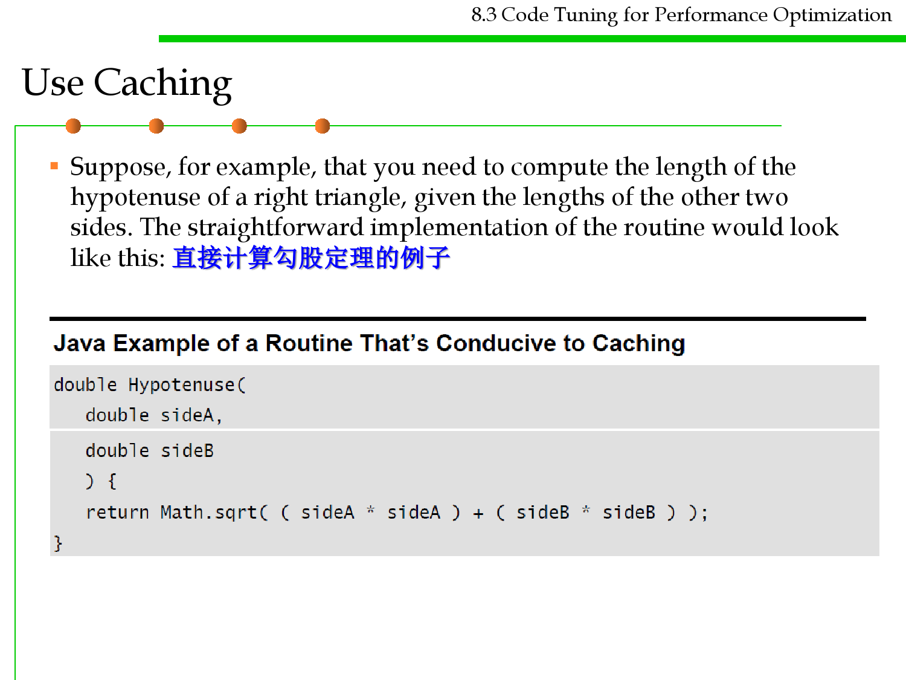
Use Caching
8.3 Code Tuning for Performance Optimization
▪ Suppose, for example, that you need to compute the length of the
hypotenuse of a right triangle, given the lengths of the other two
sides. The straightforward implementation of the routine would look
like this: 直接计算勾股定理的例子
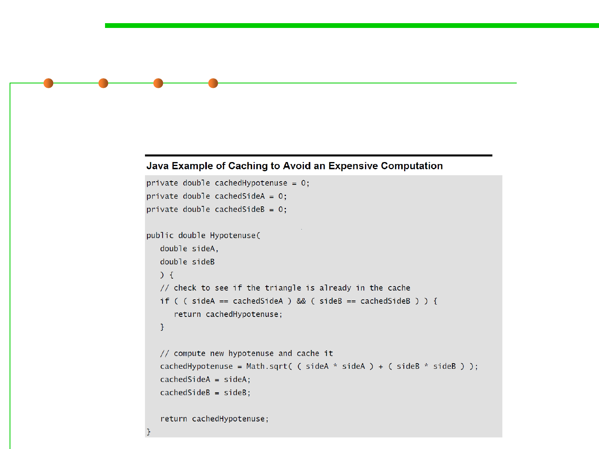
Use Caching
8.3 Code Tuning for Performance Optimization
▪ If you know that the same values tend to be requested repeatedly,
you can cache values this way:


Use Caching
8.3 Code Tuning for Performance Optimization
▪ The success of the cache depends on the relative costs of accessing a
cached element, creating an uncached element, and saving a new
element in the cache. 缓存的成功取决于访问缓存元素的相对成本，创
建未缓存的元素以及将新元素保存在缓存中。
▪ Success also depends on how often the cached information is
requested. In some cases, success might also depend on caching done
by the hardware. 成功还取决于请求缓存信息的频率
▪ Generally, the more it costs to generate a new element and the more
times the same information is requested, the more valuable a cache
is. The cheaper it is to access a cached element and save new
elements in the cache, the more valuable a cache is.
▪ As with other optimization techniques, caching adds complexity and
tends to be error prone. 缓存增加了复杂性并且容易出错。

Software Construction
(4) Expression-related code tuning
8.3 Code Tuning for Performance Optimization
Exploit algebraic identities-代数恒等式
▪ You can use algebraic identities to replace costly operations with
cheaper ones. 通过代数恒等式，用低代价的操作替代复杂操作
▪ For example, the following expressions are logically equivalent:
– not a and not b
– not (a or b)
– the second expression can save a not operation.
▪ E.g., sqrt(x)<sqrt(y) vs. x<y
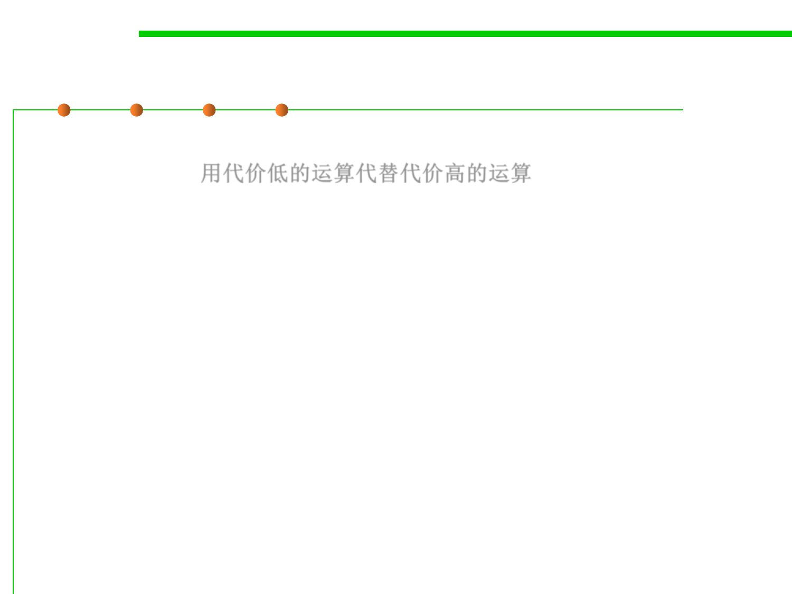
8.3 Code Tuning for Performance Optimization
Use strength reduction—削弱运算强度
▪ strength reduction means replacing an expensive operation with a
cheaper one. 用代价低的运算代替代价高的运算
▪ Here are some possible substitutions:
– Replace multiplication with addition.
– Replace exponentiation with multiplication.
– Replace trigonometric routines with their trigonometric identities.
– Replace longlong integers with longs or ints (but watch for performance
issues associated with using native-length vs. non-native–length integers)
– Replace floating-point numbers with fixed-point numbers or integers.
– Replace double-precision floating points with single-precision numbers.
– Replace integer multiplication-by-two and division-by-two with shift
operations.

8.3 Code Tuning for Performance Optimization
Initialize at compile time
▪ If you’re using a named constant or a magic number in a routine call
and it’s the only argument, that’s a clue that you could precompute
the number, put it into a constant, and avoid the routine call. The
same principle applies to multiplications, divisions, additions, and
other operations. 对于固定常量或值提前计算出来
▪ Log() is time-consuming routine .
public static double log2(double value) {
return Math.log(value) / Math.log(2);
}
public final static double log2=0.69314718;
……
public static double log2(double value) {
return Math.log(value) / log2;
}
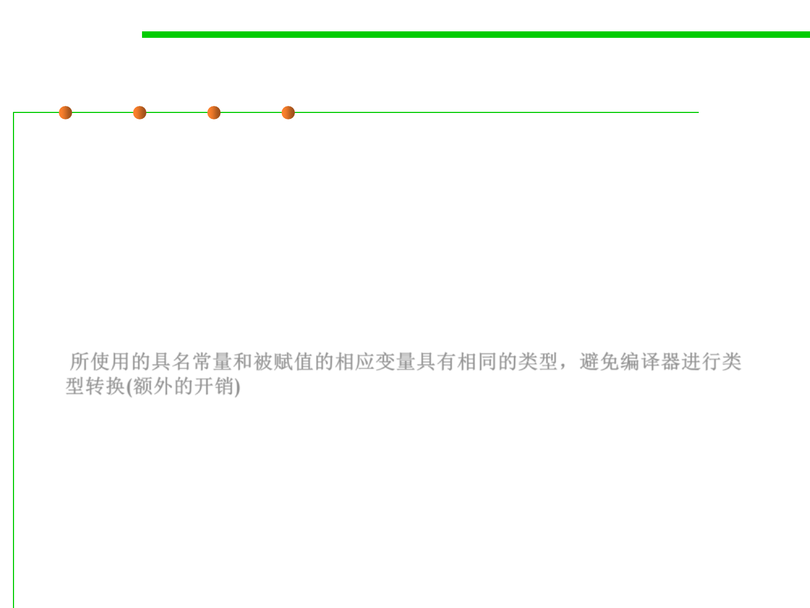
8.3 Code Tuning for Performance Optimization
Use correct type of constants
▪ Use named constants and literals that are the same type as the
variables they’re assigned to. When a constant and its related
variable are different types, the compiler has to do a type
conversion to assign the constant to the variable.
▪ A good compiler does the type conversion at compile time so that it
doesn’t affect run-time performance. But a less advanced compiler
or an interpreter generates code for a runtime conversion.
所使用的具名常量和被赋值的相应变量具有相同的类型，避免编译器进行类
型转换(额外的开销)

8.3 Code Tuning for Performance Optimization
Use the Correct Type of Constants
▪ In the first case, the initializations look like this:
– x=5
– i = 3.14
– assuming x is a floating point variable and i is an integer, require type
conversions.
▪ In the second case, they look like this:
– x = 3.14
– i=5
– don’t require type conversions.
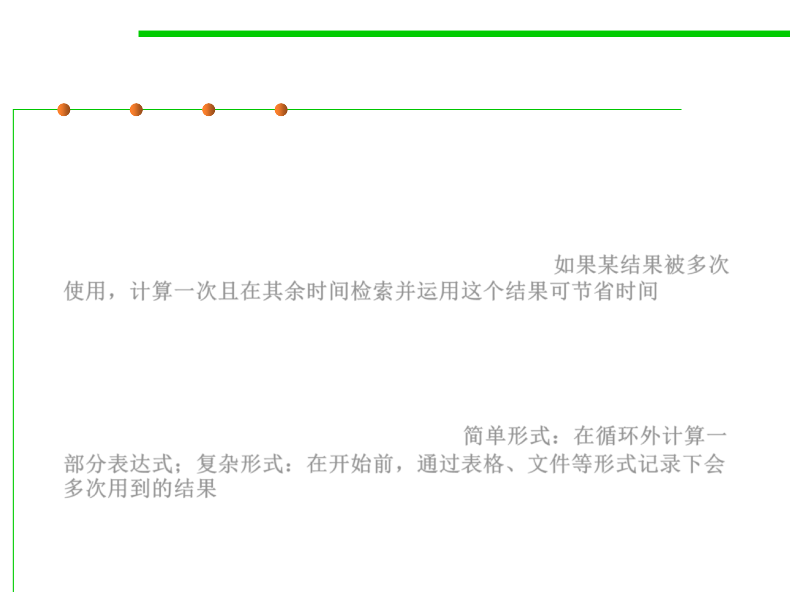
Precompute Results
8.3 Code Tuning for Performance Optimization
▪ A common low-level design decision is the choice of whether to
compute results on the fly or compute them once, save them, and
look them up as needed.
▪ If the results are used many times, it’s often cheaper to compute
them once and look them up the rest of the time. 如果某结果被多次
使用，计算一次且在其余时间检索并运用这个结果可节省时间
▪ At the simplest level, you might compute part of an expression
outside a loop rather than inside. At a more complicated level, you
might compute a lookup table once when program execution
begins, using it every time thereafter, or you might store results in
a data file or embed them in a program. 简单形式：在循环外计算一
部分表达式；复杂形式：在开始前，通过表格、文件等形式记录下会
多次用到的结果

Precompute Results
8.3 Code Tuning for Performance Optimization
▪ Optimizing a program by precomputation can take several forms:
– Computing results before the program executes and wiring them into
constants that are assigned at compile time
– Computing results before the program executes and hard-coding them
into variables used at run time
– Computing results before the program executes and putting them into a
file that’s loaded at run time
– Computing results once, at program startup, and then referencing them
each time they’re needed
– Computing as much as possible before a loop begins, minimizing the
work done inside the loop
– Computing results the first time they’re needed and storing them so that
you can retrieve them when they’re needed again
8.3 Code Tuning for Performance Optimization
Eliminate Common Subexpressions删除公共表达式
▪ If you find an expression that’s repeated several times, assign it to a
variable and refer to the variable rather than recomputing the
expression in several places.
▪ The loan-calculation example has a common subexpression that you
could eliminate. Here’s the original code:

Software Construction
(5) Function-related code tuning
Routines
8.3 Code Tuning for Performance Optimization
▪ One of the most powerful tools in code tuning is a good routine
decomposition. 良好的子程序分解是调优的强大工具
– Small, well-defined routines save space because they take the place of
doing jobs separately in multiple places.
– They make a program easy to optimize because you can refactor code in
one routine and thus improve every routine that calls it.
– Small routines are relatively easy to rewrite in assembler. Long, tortuous
routines are hard enough to understand on their own; in assembler they’re
impossible.
– 小巧而良好定义的子程序节省空间、易于优化、易于重写

Software Construction
6 Code Tuning for I/O and logging
8

8.3 Code Tuning for Performance Optimization
Code Tuning for I/O and logging
▪ See 7.4

Software Construction
7 Code Tuning for Data structure
and algorithms
11

8.3 Code Tuning for Performance Optimization
Code Tuning for Data structure and algorithms
▪ Learning from the courses “Data Structure” and “Algorithm”

Software Construction
The end
May 19, 2019